<!doctype html>
<html lang="en">
<head>
  <meta charset="utf-8">
  <meta name="viewport" content="width=device-width, initial-scale=1">
  <title>arxiv digest — 2026-10-02</title>
  <style>
:root {
  --bg: #ffffff;
  --fg: #1f2328;
  --muted: #59636e;
  --border: #d0d7de;
  --card: #f6f8fa;
  --link: #0969da;
}
body {
  max-width: 980px;
  margin: 0 auto;
  padding: 2rem 1rem 5rem;
  font-family: -apple-system, BlinkMacSystemFont, "Segoe UI", Helvetica, Arial, sans-serif;
  line-height: 1.55;
  color: var(--fg);
  background: var(--bg);
}
a { color: var(--link); }
img { max-width: 100%; height: auto; }
pre, code { background: var(--card); border-radius: 6px; }
pre { padding: 1rem; overflow-x: auto; }
blockquote { border-left: 4px solid var(--border); padding-left: 1rem; color: var(--muted); }
details { margin: 0.6rem 0; }
summary { cursor: pointer; font-weight: 600; }
.paper-figures-scroll {
  display: flex;
  gap: 1rem;
  overflow-x: auto;
  overscroll-behavior-x: contain;
  padding: 0.75rem 0.25rem 1rem;
  margin: 1rem 0 1.25rem;
  border-top: 1px solid var(--border);
  border-bottom: 1px solid var(--border);
  scroll-snap-type: x proximity;
}
.paper-figure-card {
  flex: 0 0 min(260px, 72vw);
  scroll-snap-align: start;
  background: var(--card);
  border: 1px solid var(--border);
  border-radius: 12px;
  padding: 0.55rem;
}
.paper-figure-card img {
  display: block;
  width: 100%;
  max-height: 240px;
  object-fit: contain;
  background: white;
  border-radius: 8px;
}
.paper-figure-caption {
  display: block;
  margin-top: 0.5rem;
  color: var(--muted);
  font-size: 0.85rem;
}
.figure-strip-hint {
  color: var(--muted);
  font-size: 0.9rem;
  margin-bottom: -0.3rem;
}
</style>
  <!-- MathJax: renders $...$ inline math and $$...$$ display math, plus
       \(...\) and \[...\]. Loaded from the official CDN; works offline
       once cached. Configured to skip code/pre blocks so arxiv IDs that
       look like dollar amounts don't get mangled. -->
  <script>
    window.MathJax = {
      tex: {
        inlineMath: [['$', '$'], ['\\(', '\\)']],
        displayMath: [['$$', '$$'], ['\\[', '\\]']],
        processEscapes: true,
        processEnvironments: true
      },
      options: {
        skipHtmlTags: ['script', 'noscript', 'style', 'textarea', 'pre', 'code'],
        ignoreHtmlClass: 'tex2jax_ignore',
        processHtmlClass: 'tex2jax_process'
      }
    };
  </script>
  <script id="MathJax-script" async
    src="https://cdn.jsdelivr.net/npm/mathjax@3/es5/tex-chtml.js"></script>
</head>
<body>
<header style="background-color: #333; color: white; padding: 15px; margin-bottom: 20px;">
  <h1 style="margin: 0; font-size: 24px;">
    <a href="https://ochelpan.github.io/arXiv_clean/" style="color: white; text-decoration: none;">Main</a>
  </h1>
</header>

<h1>Daily arXiv Report</h1>

<hr>
<p>
<a href="index.html">← Index</a>
 · <a href="papers_08.html">← Previous</a> · <a href="papers_10.html">Next →</a>
</p>
<hr>

<h2>Papers 161–180</h2>
<p><a id="paper-2609.39890"></a></p>
<h3 id="quantum-state-routing-and-perfect-state-transfer-on-signed-graphs-under-environmental-noise"><a href="http://arxiv.org/abs/2609.39890v1">Quantum State Routing and Perfect State Transfer on Signed Graphs under Environmental Noise</a></h3>
<p><strong>Authors:</strong> Nur Mohammad Sanfui, Supriyo Dutta<br>
<strong>Type:</strong> theory · <strong>Category:</strong> quantum information and computing · <strong>PDF:</strong> <a href="https://arxiv.org/pdf/2609.39890v1">https://arxiv.org/pdf/2609.39890v1</a><br>
<strong>Analysis basis:</strong> full PDF text, analyzed in chunks
<strong>Topic relevance:</strong> <code>correlated / nonlocal dissipation</code> <strong>1/5</strong> · <code>interference shaping light</code> <strong>1/5</strong> · <code>quantum measurements</code> <strong>1/5</strong></p>
<div class="figure-strip-hint">↔ Scroll figures horizontally</div>
<div class="paper-figures-scroll">
<figure class="paper-figure-card">
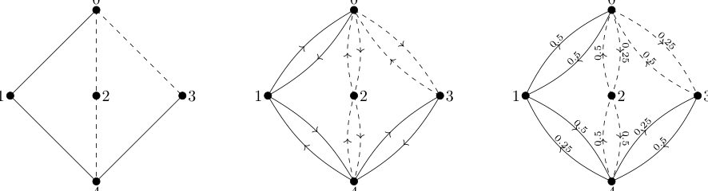
<figcaption class="paper-figure-caption"><b>Fig 1.</b> Figure 1: A signed undirected graph and a signed directed graph generated by assigning two opposite orientations on every edge.</figcaption>
</figure>
<figure class="paper-figure-card">
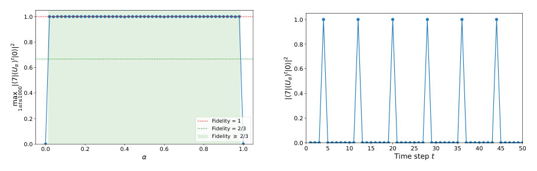
<figcaption class="paper-figure-caption"><b>Fig 2.</b> Figure 2: We study the dependency of fidelity on the parameter α for the graph depicted in Figure 2c.</figcaption>
</figure>
<figure class="paper-figure-card">
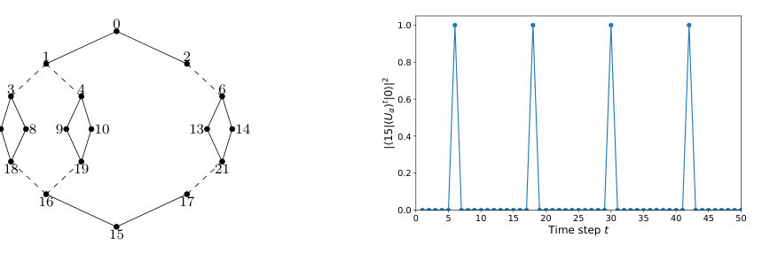
<figcaption class="paper-figure-caption"><b>Fig 3.</b> Figure 3: In the Figure 3a we consider a glued tree. When an edge is damaged we need to remove it. We also remove a number of additional edges to maintain the structure of glued tree. The graphs in two steps of this operations are depicted in Figure 3c and Figure 3e. The resultants graphs also allow PST between r1 = 0 and r2 = 15.</figcaption>
</figure>
<figure class="paper-figure-card">
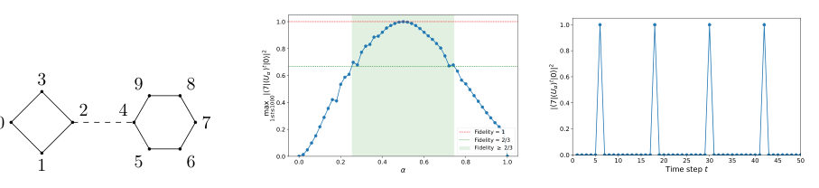
<figcaption class="paper-figure-caption"><b>Fig 4.</b> Figure 4: We study the fidelity of state transfer from vertex 0 to vertex 7 of the graph in Figure 4a with respect to α and time.</figcaption>
</figure>
<figure class="paper-figure-card">
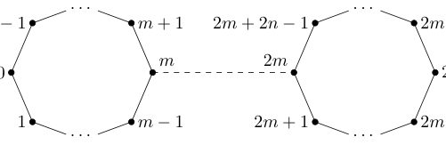
<figcaption class="paper-figure-caption"><b>Fig 5.</b> Figure 5: A general dumbbell graph D2m,0,2n which is described in Theorem 1. PST occurs between 0 and 2m + n at time t = m + 1 + n.</figcaption>
</figure>
</div>

<p><strong>Summary.</strong> This paper proposes a novel, measurement-free quantum routing architecture using coined quantum walks on signed graphs. By engineering the graph structure with controlled phase shifts, the authors achieve deterministic Perfect State Transfer (PST) and demonstrate that the protocol maintains high fidelity over significant distances even when subjected to realistic amplitude and phase damping noise.</p>
<p><strong>Why it may be interesting.</strong> This work directly addresses quantum network communication, which is a major focus area for quantum information theorists. The use of topological invariants (edge signs) to achieve robustness against noise is highly relevant to building fault-tolerant quantum hardware.</p>
<details>
<summary>Detailed structure</summary>
<p><strong>Main problem.</strong> The core problem is achieving measurement-free, deterministic routing of unknown quantum information across distributed networks while mitigating decoherence from environmental noise.</p>
<p><strong>Main result.</strong> The authors demonstrate that using coined quantum walks on signed graphs enables Perfect State Transfer (PST) with unit fidelity, and they derive analytical limits showing the protocol's resilience against amplitude and phase damping noise.</p>
<p><strong>Method.</strong> The research employs the formalism of coined Szegedy quantum walks on specially constructed signed graphs, treating edge signs as localized $\pi$-phase shifts to enforce destructive interference and zero back-scattering.</p>
<p><strong>Model / system.</strong> The system is a quantum router modeled by coined quantum walks on edge-duplicated signed graphs ($\vec{\Sigma}$). Positive edges are standard waveguides, while negative edges introduce controlled $\pi$-phase shifts, enabling topological control over state propagation.</p>
<p><strong>Key observables.</strong> Fidelity ($F$), Back-scattering suppression, Maximum achievable hop distance ($   au_{\max}$) under noise.</p>
<p><strong>Important parameters / regimes.</strong> Control parameter $\alpha=0.5$, Amplitude damping rate ($\lambda$), Phase damping rate ($p$), Graph topology (e.g., dumbbell switch $D_{2m,0,2n}$).</p>
<p><strong>Assumptions / limitations.</strong> The model assumes the physical feasibility of implementing localized $\pi$-phase shifts using external modulators, and the noise analysis assumes noise acts independently at each discrete time step.</p>
<p><strong>Figures summary.</strong> Figures illustrate the signed graph structure, the process of generating the signed directed graph from an undirected one, and examples of the topological archetypes used for routing.</p>
<p><strong>Paper structure.</strong> The paper establishes the need for measurement-free routing, critiques conventional quantum walks, introduces the signed graph model to enforce zero back-scattering, proves deterministic PST on archetypes, and concludes with a detailed analysis of noise robustness.</p>
</details>
<details>
<summary>Abstract</summary>
<p>Routing unknown quantum information across distributed communication networks requires autonomous, measurement-free mechanisms to prevent wave-function collapse. Szegedy quantum walks provide a mechanism for spatial state transport. The conventional walks on unweighted graphs suffer from severe back-reflection, spatial dispersion, and channel crosstalk. In this paper, we introduce a deterministic topological quantum routing architecture based on coined Szegedy quantum walks on edge-duplicated signed graphs. By treating edge signs as localized phase shifts within a balanced coin reflection, we enforce an exact zero back-scattering condition across routing nodes. We demonstrate deterministic Perfect State Transfer (PST) with unit fidelity at exact arrival times across fundamental archetypes, including the signed dumbbell switch $D_{2m,0,2n}$ and scalable glued binary trees. Furthermore, we analyse routing performance under realistic open-system amplitude and phase damping noise channels.</p>
</details>
<p><sub><a href="#top">↑ back to top</a></sub></p>

<p><a id="paper-2609.40135"></a></p>
<h3 id="smite-a-quasiclassical-trajectory-qct-program-for-bimolecular-collisions-and-unimolecular-dynamics-on-ab-initio-and-machine-learned-potential-energy-surfaces"><a href="http://arxiv.org/abs/2609.40135v1">Smite: A quasiclassical trajectory (QCT) program for bimolecular collisions and unimolecular dynamics on ab-initio, and machine-learned potential energy surfaces</a></h3>
<p><strong>Authors:</strong> Péter Szabó, Jenne van Veerdeghem, Jérôme Loreau, Jean-François Müller, Jeremy N. Harvey<br>
<strong>Type:</strong> theory · <strong>Category:</strong> other · <strong>PDF:</strong> <a href="https://arxiv.org/pdf/2609.40135v1">https://arxiv.org/pdf/2609.40135v1</a><br>
<strong>Analysis basis:</strong> full PDF text, analyzed in chunks
<strong>Topic relevance:</strong> <code>Keldysh / 2PI / non-Gaussian methods</code> <strong>1/5</strong> · <code>methods for driven-dissipative</code> <strong>1/5</strong> · <code>quantum measurements</code> <strong>1/5</strong></p>
<div class="figure-strip-hint">↔ Scroll figures horizontally</div>
<div class="paper-figures-scroll">
<figure class="paper-figure-card">
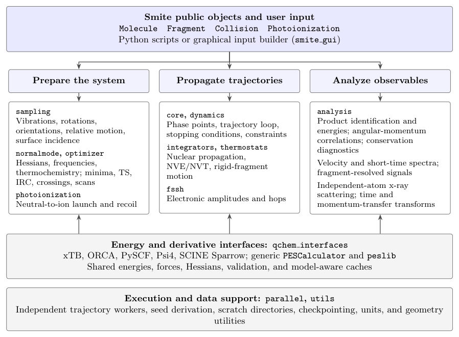
<figcaption class="paper-figure-caption"><b>Fig 1.</b> FIG. 1. Module map of Smite. The upper branches organize capabilities by their role in a calculation; the lower bands provide shared services. This is a functional map, not a Python inheritance or import graph. The present FSSH state adapter uses PES calculators, whereas single-surface nuclear dynamics and stationary-point tools also use the electronic-structure backends. The input builder generates scripts for a subset of the Python interface.</figcaption>
</figure>
</div>

<p><strong>Summary.</strong> This paper introduces Smite, a powerful Python toolkit for performing quasiclassical trajectory simulations of molecular collisions and chemical reactions. It allows researchers to model complex dynamics by coupling classical trajectory propagation with advanced potential energy surface methods, including machine learning potentials. This tool is crucial for testing the limits of statistical theories and capturing non-equilibrium chemical behavior in gas-phase and surface environments.</p>
<p><strong>Why it may be interesting.</strong> The explicit focus on molecular dynamics, energy transfer, and the coupling between electronic structure methods (ab-initio/ML) and classical dynamics makes it highly relevant for AMO physicists studying non-adiabatic processes and complex molecular interactions.</p>
<details>
<summary>Detailed structure</summary>
<p><strong>Main problem.</strong> The paper addresses the challenge of modeling chemical reactions and molecular dynamics at the atomic level, especially when simple statistical theories fail to capture complex, non-equilibrium behavior.</p>
<p><strong>Main result.</strong> The development of 'Smite,' a comprehensive Python toolkit, allows for detailed, explicit simulations of molecular collisions and reactions across diverse physical regimes.</p>
<p><strong>Method.</strong> The core method is the Quasiclassical Trajectory (QCT) simulation, which propagates classical trajectories governed by potential energy surfaces derived from <em>ab-initio</em> or machine-learned calculations.</p>
<p><strong>Model / system.</strong> The toolkit is designed for reactive and inelastic bimolecular collisions, unimolecular dynamics, and molecular collisions. It handles complex initial state preparation, including anharmonic sampling for vibration and rotation, and supports multiple potential energy surfaces for surface hopping.</p>
<p><strong>Key observables.</strong> Product energy partitioning, stereodynamical correlations, time-resolved vibrational signatures, and cross sections.</p>
<p><strong>Important parameters / regimes.</strong> Collision energy, temperature, and the specific nature of the potential energy surface (e.g., derived from DFT or ML potentials).</p>
<p><strong>Assumptions / limitations.</strong> The primary assumption is that explicit dynamics are necessary when statistical assumptions (like negligible recrossing or well-defined reaction coordinates) break down. Limitations include the absence of true quantum tunneling.</p>
<p><strong>Paper structure.</strong> The paper introduces the Smite toolkit, detailing its capabilities for initial state preparation, trajectory propagation using various PES sources, and the calculation of multiple diagnostic observables.</p>
</details>
<details>
<summary>Abstract</summary>
<p>We present Smite, a Python toolkit for quasiclassical trajectory (QCT) simulations of reactive and inelastic bimolecular collisions, unimolecular dynamics, and molecular collisions with finite surface models. A central feature is the explicit control of reactant preparation: harmonic normal modes admit fixed quantum numbers, prescribed energies, thermal quantum populations, or ground-state Wigner sampling; rotation is prepared at fixed angular-momentum magnitude or from thermal distributions appropriate to diatomic and polyatomic rotors. Rotating-Morse sampling provides a coupled anharmonic treatment of diatomic vibration and rotation, while saved molecular-dynamics phase points provide an alternative source of initial conditions. The same nuclear propagators operate with on-the-fly electronic-structure calculations or user-supplied analytical and machine-learned potential energy surfaces. Additional modules provide constrained rigid-fragment dynamics, thermostat-based preparation, photoionization initial conditions with energy and recoil constraints, and fewest-switches surface hopping (FSSH) on multiple PESs with approximate curvature-derived couplings. Geometry optimization, transition-state searches, crossing-point optimization, intrinsic-reaction-coordinate following, and thermochemistry use the same energy and derivative interfaces. Analysis tools connect trajectories to product energy partitioning, stereodynamical correlations, time-resolved vibrational signatures, and independent-atom x-ray scattering.</p>
</details>
<p><sub><a href="#top">↑ back to top</a></sub></p>

<p><a id="paper-2609.39986"></a></p>
<h3 id="atomic-scale-imaging-of-lattice-relaxation-and-topological-flat-bands-in-helical-trilayer-graphene"><a href="http://arxiv.org/abs/2609.39986v1">Atomic-Scale Imaging of Lattice Relaxation and Topological Flat Bands in Helical Trilayer Graphene</a></h3>
<p><strong>Authors:</strong> Shudan Jiang, Zonglin Li, Yu Gu, Liang Liu, Dandan Guan, Yaoyi Li, Hao Zheng, Canhua Liu, Kenji Watanabe, Takashi Taniguchi, Shengwei Jiang, Xiaoxue Liu, Zhiwen Shi, Guorui Chen, Jinfeng Jia, Tingxin Li, Can Li, Shiyong Wang<br>
<strong>Type:</strong> both · <strong>Category:</strong> strongly correlated electrons · <strong>PDF:</strong> <a href="https://arxiv.org/pdf/2609.39986v1">https://arxiv.org/pdf/2609.39986v1</a><br>
<strong>Analysis basis:</strong> full PDF text, analyzed in chunks
<strong>Topic relevance:</strong> <code>analog quantum simulation</code> <strong>1/5</strong> · <code>quantum measurements</code> <strong>1/5</strong></p>
<div class="figure-strip-hint">↔ Scroll figures horizontally</div>
<div class="paper-figures-scroll">
<figure class="paper-figure-card">
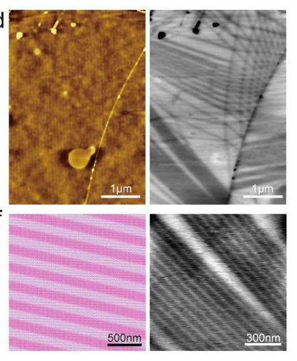
<figcaption class="paper-figure-caption"><b>Fig 1.</b> Figure 1 | Device architecture and lattice relaxation in helical twisted trilayer graphene. (a) Schematic of the gate-tunable device geometry used for STM/STS measurements. (b,c) Schematic illustrations of the helical twisted trilayer graphene structure and the resulting lattice reconstruction into a triangular supermoiré domain network. (d) Representative AFM topography and SNOM amplitude images of an HTG sample. (e,f) Simulated supermoiré structures (left) and corresponding zoomed-in SNOM images (right). Uniaxial heterostrain modifies the supermoiré morphology, compressing the triangular domains and driving the emergence of stripe-like domains connected by smooth boundaries, in agreement...</figcaption>
</figure>
<figure class="paper-figure-card">

<figcaption class="paper-figure-caption"><b>Fig 2.</b> Figure 1b illustrates the helical twisted trilayer graphene structure and its reconstruction into a triangular supermoiré pattern. This reconstruction originates from the interference between the moiré lattices generated by the two twist angles, θ₁ and θ₂. For equal twist angles (θ₁ = θ₂ = θ), the moiré patterns of the upper and lower graphene bilayers are rotated relative to one another, producing a long-wavelength supermoiré structure [36,46]. The resulting hierarchy of length scales, from the atomic lattice to the moiré and supermoiré periods, strongly amplifies the effects of lattice relaxation.</figcaption>
</figure>
<figure class="paper-figure-card">
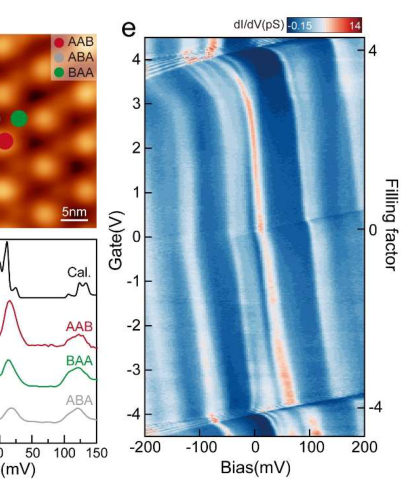
<figcaption class="paper-figure-caption"><b>Fig 3.</b> Figure 2 | Topological flat bands and honeycomb electronic texture in HTG. (a) Schematic illustration of the atomic stacking configurations at the high-symmetry sites of a moiré unit cell. (b) STM topography resolving the emergent honeycomb moiré lattice. (c) Calculated band structure of HTG at a twist angle of 1.65°. (d) Experimental dI/dV spectra acquired at the representative sites marked in (b), together with the calculated density of states. (e) Gate-dependent dI/dV spectra measured as a function of graphite back-gate voltage, revealing the filling evolution of the narrow moiré bands.</figcaption>
</figure>
<figure class="paper-figure-card">

<figcaption class="paper-figure-caption"><b>Fig 4.</b> Figure 3b presents a series of dI/dV line cuts measured across a domain wall. The spectroscopic signatures of the AAB and BBA regions are nearly identical, as are those of the BAA and ABB regions, directly linking the local electronic structure to the underlying stacking configuration. This correspondence indicates that adjacent</figcaption>
</figure>
<figure class="paper-figure-card">
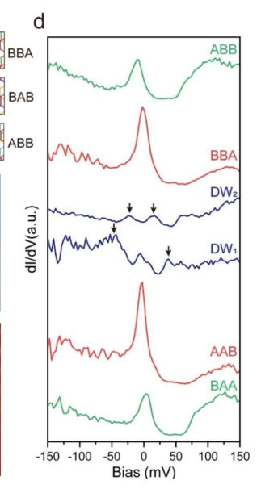
<figcaption class="paper-figure-caption"><b>Fig 5.</b> Figure 3 | One-dimensional edge states at supermoiré domain walls. (a) Zoomed-in schematic illustration of the atomic-scale stacking configuration across a domain wall. (b) Spatially resolved dI/dV line cut across a domain wall, revealing in-gap states. (c) dI/dV maps showing the spatial localization of one-dimensional domain-wall states. (d) Selected dI/dV spectra extracted from the positions marked in panel (b).</figcaption>
</figure>
</div>

<p><strong>Summary.</strong> This paper provides a comprehensive real-space study of Helical Trilayer Graphene, using STM and SNOM to image supermoiré lattice relaxation. The authors successfully linked the observed lattice domain structure to the emergence of topological flat bands, identifying a magic angle of 1.9° through both structural and spectroscopic measurements.</p>
<p><strong>Why it may be interesting.</strong> The direct experimental mapping of structural relaxation to topological electronic features provides a concrete platform for studying correlated electron physics in tunable 2D materials, which is highly relevant to understanding emergent quantum states.</p>
<details>
<summary>Detailed structure</summary>
<p><strong>Main problem.</strong> The study aims to bridge the gap between the atomic-scale lattice reconstruction and the electronic properties, specifically the topological flat bands, in Helical Trilayer Graphene (HTG).</p>
<p><strong>Main result.</strong> The research established a direct microscopic link showing that lattice relaxation dictates the domain structure, which in turn hosts narrow, topologically nontrivial moiré bands. Furthermore, a magic angle of approximately 1.9° was identified.</p>
<p><strong>Method.</strong> The work combines experimental techniques like Scanning Near-Field Optical Microscopy (SNOM) and low-temperature Scanning Tunneling Microscopy/Spectroscopy (LT-STM/STS) with lattice-relaxation simulations.</p>
<p><strong>Model / system.</strong> The physical system is Helical Trilayer Graphene (HTG), a moire quantum material formed by twisting three graphene layers. The study investigates the supermoiré lattice relaxation, which creates large domains separated by sharp domain walls.</p>
<p><strong>Key observables.</strong> Supermoiré lattice relaxation patterns (triangular/stripe domains), flat bands with honeycomb texture, one-dimensional boundary states, and the local Density of States (DOS) measured via STS.</p>
<p><strong>Important parameters / regimes.</strong> Twist angle ($  heta$), strain, and carrier density (gate-tunable). A key finding is the magic angle of $\approx 1.9^\circ$.</p>
<p><strong>Assumptions / limitations.</strong> The study assumes that the electronic structure is governed by the underlying lattice relaxation and domain morphology, although it notes limitations in resolving correlated gaps at integer fillings.</p>
<p><strong>Figures summary.</strong> Figures illustrate the device architecture and supermoiré reconstruction via AFM/SNOM, the honeycomb moiré lattice structure, and the dependence of the DOS on the twist angle, confirming the magic angle.</p>
<p><strong>Paper structure.</strong> The paper proceeds by first visualizing the supermoiré reconstruction using microscopy, then using STS to map the electronic structure, confirming flat bands and boundary states, and finally correlating these electronic features with the lattice parameters to determine the magic angle.</p>
</details>
<details>
<summary>Abstract</summary>
<p>Helical trilayer graphene (HTG) has emerged as a highly tunable moire quantum material that hosts strong electronic correlations and nontrivial band topology. However, the atomic-scale lattice structure and local electronic properties have remained largely unexplored. Here we present a comprehensive real-space study of HTG using a combination of scanning near-field optical microscopy and low-temperature scanning tunneling microscopy. We directly image supermoire lattice relaxation, revealing large triangular domains separated by sharp domain walls, as well as stripe domains connected by smoothly varying boundaries. Atomic-scale spectroscopy uncovers flat bands with a honeycomb electronic texture and one-dimensional boundary states confined to domain walls. By systematically varying the twist angle, we identify a magic angle of approximately 1.9°, substantially larger than the 1.6 degree predicted by theory. Our results establish a direct microscopic link between lattice relaxation and flat bands in HTG.</p>
</details>
<p><sub><a href="#top">↑ back to top</a></sub></p>

<p><a id="paper-2609.40345"></a></p>
<h3 id="gibbs-sampling-in-the-shattered-phase-by-decoded-quantum-interferometry"><a href="http://arxiv.org/abs/2609.40345v1">Gibbs Sampling in the Shattered Phase by Decoded Quantum Interferometry</a></h3>
<p><strong>Authors:</strong> Leo Zhou, Noah Shutty, Mark Sellke, Stephen P. Jordan<br>
<strong>Type:</strong> theory · <strong>Category:</strong> disordered systems and neural networks · <strong>PDF:</strong> <a href="https://arxiv.org/pdf/2609.40345v1">https://arxiv.org/pdf/2609.40345v1</a><br>
<strong>Analysis basis:</strong> full PDF text, analyzed in chunks
<strong>Topic relevance:</strong> <code>analog quantum simulation</code> <strong>1/5</strong> · <code>quantum measurements</code> <strong>1/5</strong></p>
<div class="figure-strip-hint">↔ Scroll figures horizontally</div>
<div class="paper-figures-scroll">
<figure class="paper-figure-card">

<figcaption class="paper-figure-caption"><b>Fig 1.</b> Figure 1: The different phases in an Ising k-spin glass for large k, visualized by a cluster decomposition of the Gibbs measure at different inverse temperature β. Prior work identified E(βOGP) and βdyn as barriers for broad classes of algorithms, motivating the possibility that they reflect more general computational barriers. Here we prove hardness of Gibbs sampling for Glauber dynamics and all stable algorithms throughout the indicated red interval in the shattered phase. In contrast, DQI+USD and Prange’s algorithm efficiently Gibbs sample for all β &lt; βALG, including at temperatures deep in the shattered phase.</figcaption>
</figure>
</div>

<p><strong>Summary.</strong> This paper applies Decoded Quantum Interferometry (DQI) to sample from the complex energy landscapes of spin glass models. It demonstrates that DQI can overcome topological barriers that cause stable classical sampling algorithms to fail at low temperatures. While showing DQI's power, the authors also note that a classical algorithm (Prange's) can match this performance, suggesting the quantum advantage is not universal for this specific problem.</p>
<p><strong>Why it may be interesting.</strong> The work directly addresses the limits of classical simulation techniques in complex, disordered quantum/classical systems, providing a quantum information-theoretic tool (DQI) to probe these limits.</p>
<details>
<summary>Detailed structure</summary>
<p><strong>Main problem.</strong> The paper investigates the ability of Decoded Quantum Interferometry (DQI) to sample from the Gibbs measures of classical Ising spin Hamiltonians in the highly complex 'shattered phase' of spin glass models.</p>
<p><strong>Main result.</strong> DQI can successfully sample in the shattered phase at temperatures ($eta < eta_{	ext{ALG}}$) where stable classical algorithms fail due to topological barriers, although it is shown that Prange's algorithm can match this performance.</p>
<p><strong>Method.</strong> The Gibbs sampling problem is mapped onto a quantum decoding problem, which is then solved using the DQI framework augmented with Unitary State Preparation (DQI+USD).</p>
<p><strong>Model / system.</strong> The system is modeled by classical Ising $k$-spin glasses (or Max-$k$-XORSAT) defined on random Erdős-Rényi hypergraphs. The dynamics are governed by the Gibbs measure $\mu_{eta,H}(z) \propto e^{-eta H(z)}$.</p>
<p><strong>Key observables.</strong> Inverse temperature ($eta$), total variation distance ($d_{	ext{TV}}$), and the achievable sampling temperature ($eta_{	ext{ALG}}$).</p>
<p><strong>Important parameters / regimes.</strong> The average degree $D$ and the spin interaction size $k$ are crucial parameters. The dynamical transition temperature $eta_{	ext{dyn}}$ is also key.</p>
<p><strong>Assumptions / limitations.</strong> The analysis relies on the reduction of Gibbs sampling to a quantum decoding problem and assumes the existence of topological barriers (shattering/disorder chaos) that impede stable classical samplers.</p>
<p><strong>Figures summary.</strong> Figure 1 illustrates the relative positions of different phase transition temperatures ($eta_{	ext{OGP}}$, $eta_{	ext{dyn}}$, and the DQI/Prange sampling range) within the spin glass phase diagram.</p>
<p><strong>Paper structure.</strong> The paper first establishes the reduction of Gibbs sampling to quantum decoding. It then analyzes the failure of stable classical algorithms in the shattered phase, contrasting this with the success of DQI+USD and Prange's algorithm in reaching lower temperatures.</p>
</details>
<details>
<summary>Abstract</summary>
<p>We apply Decoded Quantum Interferometry (DQI) to sample from the Gibbs measures of classical Ising spin Hamiltonians. We show that this Gibbs sampling problem reduces to a quantum decoding problem, and the temperature achievable by DQI is determined by the performance of decoding algorithms. We then focus on the task of Gibbs sampling for classical Ising $k$-spin glasses (or Max-$k$-XORSAT) on random Erdős-Rényi hypergraphs with average degree $D\ge k$. In a temperature range beginning asymptotically at the predicted dynamical phase transition, $β_{\rm dyn}(k,D) = \sqrt{(2\ln k)/D}\times [1+o_{k\to\infty}(1)]$, we show that shattering and disorder chaos form a topological barrier that obstructs many algorithms, including Glauber dynamics and any algorithm whose output distribution is "stable" under perturbations of the input. In contrast, we prove that this barrier can be broken both by a classical algorithm based on Prange's method, and by DQI equipped with a quantum decoder. For example, when $D=αk$ with fixed $α>1$, both Prange's algorithm and DQI can sample at any inverse temperature $β< \tanh^{-1}(1/α)$ for sufficiently large $k$, well beyond the dynamical threshold $β_{\rm dyn} \sim \sqrt{2\ln k / (αk)}$. Therefore, our results show that DQI can overcome topological barriers that obstruct stable algorithms.</p>
</details>
<p><sub><a href="#top">↑ back to top</a></sub></p>

<p><a id="paper-2609.40053"></a></p>
<h3 id="impurity-induced-friedel-oscillations-and-wigner-crystallization-in-luttinger-liquids-via-unified-field-bosonization-technique"><a href="http://arxiv.org/abs/2609.40053v1">Impurity-induced Friedel oscillations and Wigner crystallization in Luttinger liquids via Unified Field Bosonization Technique</a></h3>
<p><strong>Authors:</strong> Soundarya P, Venkata Suryanarayana M, Joy Prakash Das<br>
<strong>Type:</strong> theory · <strong>Category:</strong> strongly correlated electrons · <strong>PDF:</strong> <a href="https://arxiv.org/pdf/2609.40053v1">https://arxiv.org/pdf/2609.40053v1</a><br>
<strong>Analysis basis:</strong> full PDF text, analyzed in chunks
<strong>Topic relevance:</strong> <code>Frenkel-Kontorova</code> <strong>1/5</strong> · <code>Keldysh / 2PI / non-Gaussian methods</code> <strong>1/5</strong></p>
<div class="figure-strip-hint">↔ Scroll figures horizontally</div>
<div class="paper-figures-scroll">
<figure class="paper-figure-card">
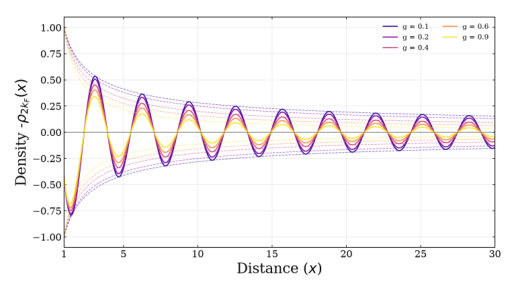
<figcaption class="paper-figure-caption"><b>Fig 1.</b> Figure 1. Friedel oscillations and their asymptotic envelopes for different strengths of mutual interactions.</figcaption>
</figure>
<figure class="paper-figure-card">
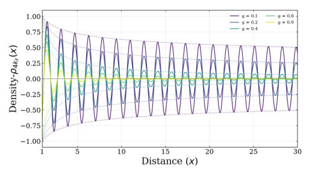
<figcaption class="paper-figure-caption"><b>Fig 2.</b> Figure 2. Wigner Crystal like density oscillations and their asymptotic envelopes for different strengths of mutual inter- actions.</figcaption>
</figure>
<figure class="paper-figure-card">
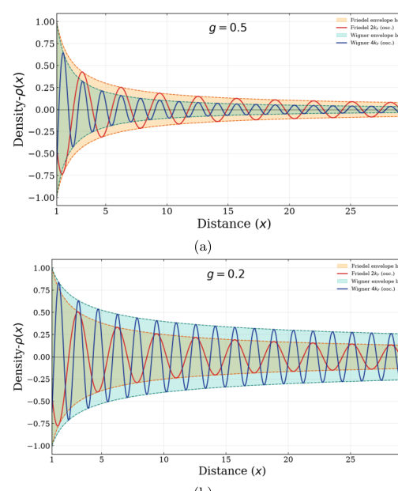
<figcaption class="paper-figure-caption"><b>Fig 3.</b> Figure 3. Comparison of the 2kF and 4kF density contribu- tions for (a) g = 0.5 showing the dominance of the Friedel component and (b) g = 0.2 showing the dominance of the 4kF component.</figcaption>
</figure>
<figure class="paper-figure-card">
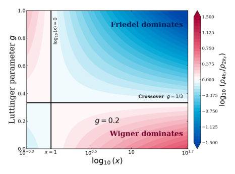
<figcaption class="paper-figure-caption"><b>Fig 4.</b> Figure 4. Ratio &lt; ρ4kF (x) &gt; / &lt; ρ2kF (x) &gt; showing the crossover between 2kF and 4kF dominated regimes at g = 1/3.</figcaption>
</figure>
</div>

<p><strong>Summary.</strong> This paper provides an analytical study of density correlations in 1D Luttinger liquids containing impurities. Using the Unified Field Bosonization Technique, the authors show that the system exhibits a crossover between impurity-driven Friedel oscillations and interaction-driven Wigner-crystal correlations at a critical interaction strength g=1/3. This framework offers a unified description of density modulation in strongly correlated quantum wires.</p>
<p><strong>Why it may be interesting.</strong> The rigorous analytical treatment of correlation functions in 1D systems, especially the identification of distinct crossover regimes based on interaction strength, provides deep insights into emergent collective behavior in strongly correlated quantum matter.</p>
<details>
<summary>Detailed structure</summary>
<p><strong>Main problem.</strong> The study investigates the competition between impurity-induced Friedel oscillations and Wigner-crystal-like correlations in interacting one-dimensional Luttinger liquids.</p>
<p><strong>Main result.</strong> The analysis reveals a critical crossover at the interaction parameter g=1/3, separating regimes where Friedel correlations dominate (g&gt;1/3) from those where Wigner-crystal correlations dominate (g&lt;1/3).</p>
<p><strong>Method.</strong> The authors employ the Unified Field Bosonization Technique (UFBT) to derive closed analytical expressions for density-density correlation functions, overcoming limitations of perturbative approaches.</p>
<p><strong>Model / system.</strong> The system is an interacting one-dimensional electron gas modeled as a Luttinger liquid, subjected to a localized static impurity potential and electron-electron interactions.</p>
<p><strong>Key observables.</strong> Density-density correlation functions, specifically the asymptotic decay of the $2k_F$ (Friedel) and $4k_F$ (Wigner-crystal) components.</p>
<p><strong>Important parameters / regimes.</strong> The Luttinger liquid interaction parameter, g, which dictates the crossover point at g=1/3.</p>
<p><strong>Assumptions / limitations.</strong> The analysis utilizes a reflection-coupled harmonic analysis to correctly account for left-right mixing caused by impurity backscattering, which is necessary for inhomogeneous systems.</p>
<p><strong>Figures summary.</strong> Figures illustrate the envelopes of the $2k_F$ and $4k_F$ correlations for varying g, explicitly mapping the crossover region around g=1/3.</p>
<p><strong>Paper structure.</strong> The paper develops the theory by first establishing the Hamiltonian and the UFBT framework, then deriving separate scaling laws for the $2k_F$ and $4k_F$ correlations, and finally unifying these results to analyze the crossover behavior.</p>
</details>
<details>
<summary>Abstract</summary>
<p>We present an analytical study of impurity-induced density correlations in interacting one-dimensional Luttinger liquids using the Unified Field Bosonization Technique (UFBT). Unlike conventional approaches that treat impurities perturbatively, UFBT incorporates localized impurities exactly at the free-fermion level while treating interactions non-perturbatively. Closed analytical expressions for fermionic Green functions and density-density correlation functions are obtained for strongly inhomogeneous systems, enabling a unified description of the impurity-induced $2k_F$ Friedel oscillations and the $4k_F$ Wigner-crystal like correlations. The corresponding scaling behaviour is derived analytically, revealing a crossover in the dominant long-distance correlations at $g=1/3$: Friedel correlations dominate for $g>1/3$, whereas Wigner-crystal like correlations become dominant for $g<1/3$, corresponding to the regime of sufficiently strong repulsive interactions. A reflection-coupled harmonic analysis is developed to account for the left-right mixing induced by impurity backscattering and to consistently reproduce the resulting density correlations. The spinless limit is also obtained as a direct reduction of the spinful formulation. These results provide an analytically controlled framework for describing impurity-induced and interaction-driven density correlations in strongly inhomogeneous one-dimensional quantum systems.</p>
</details>
<p><sub><a href="#top">↑ back to top</a></sub></p>

<p><a id="paper-2609.38825"></a></p>
<h3 id="optical-observation-of-interlayer-spin-correlation"><a href="http://arxiv.org/abs/2609.38825v1">Optical observation of interlayer spin correlation</a></h3>
<p><strong>Authors:</strong> Akiyoshi Park, Pranshoo Upadhyay, Andrey Grankin, Emil Viñas Boström, Mahdi Ghafariasl, Hassan Alnatah, Masoud Mohammadi-Arzanagh, Gautam Nambiar, Beini Gao, Alireza Alvandi, Sakthi Rajmano Madhan Kumar, Ghadah Alshalan, Isaac Sherwood, Mahmoud Jalali Mehrabad, You Zhou, Arun Ramanathan, Xavier Roy, Angel Rubio, Mohammad Hafezi<br>
<strong>Type:</strong> both · <strong>Category:</strong> strongly correlated electrons · <strong>PDF:</strong> <a href="https://arxiv.org/pdf/2609.38825v1">https://arxiv.org/pdf/2609.38825v1</a><br>
<strong>Analysis basis:</strong> full PDF text, analyzed in chunks
<strong>Topic relevance:</strong> <code>analog quantum simulation</code> <strong>1/5</strong> · <code>quantum measurements</code> <strong>1/5</strong></p>
<div class="figure-strip-hint">↔ Scroll figures horizontally</div>
<div class="paper-figures-scroll">
<figure class="paper-figure-card">
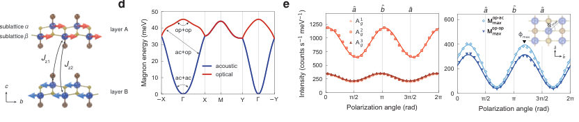
<figcaption class="paper-figure-caption"><b>Fig 1.</b> Fig. 1 Two-magnon Raman scattering in CrSBr. a, Schematic of the Raman scattering setup used to measure the dynamical correlation function (χAB) of the interlayer spin–spin operator ˆSA · ˆSB via two-magnon emission. b, Top, Experimental Raman spectrum of bulk CrSBr at T = 3.5 K, λ0 = 633 nm, P = 800 µW. Bottom, Theoretical Fleury–Loudon two-magnon spectrum decomposed by parity channel, with M op−ac max and Mop−op max labelled. c, Crystal structure along the bc-plane, with arrows marking the interlayer couplings Jz1 (diagonal) and Jz2 (axial). d, Magnon dispersion from intralayer exchanges obtained by inelastic neutron scattering (Table S1) [40]. e, Integrated Raman intensity versus...</figcaption>
</figure>
<figure class="paper-figure-card">
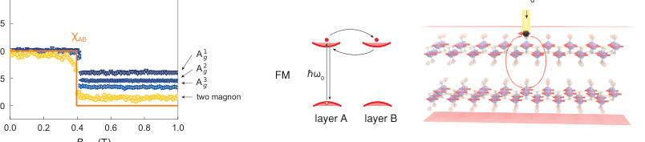
<figcaption class="paper-figure-caption"><b>Fig 2.</b> Fig. 2 Magnetic-field control of the CrSBr two-magnon. a, Hard-axis sweep (B ∥c). Top, measured Raman intensity (P = 50 µW, T = 3.5 K, λ0 = 633 nm). The two-magnon collapses smoothly up to Bsat. Bottom, Fleury– Loudon spectrum weighted by χAB. b, Easy-axis sweep (B ∥b). Top, the two-magnon is abruptly extinguished at the spin-flip field Bflip ≈0.40 T. Bottom, same vertex with the amplitude modulated by a tanh step at Bflip. c,d, Integrated intensity versus B ∥c (c) and B ∥b (d) for three phonon bands (blue) and the two two-magnon peaks (gold), normalized to B = 0. Solid orange lines, (1 −B2/(Bsat)2)2 fit in panel (c) and Θ(Bflip −B) fit for panel (d). e, AFM bilayer. The photo-excited...</figcaption>
</figure>
<figure class="paper-figure-card">
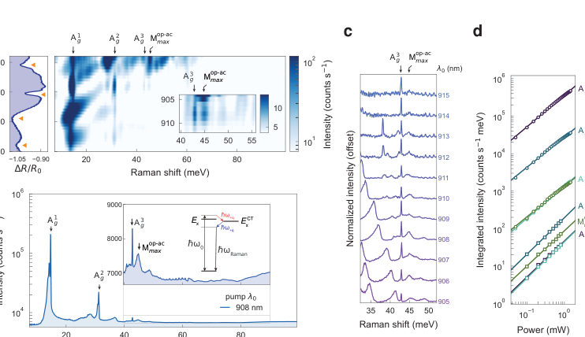
<figcaption class="paper-figure-caption"><b>Fig 3.</b> Fig. 3 Raman scattering mediated by excitonic states in CrSBr. a, Excitation-wavelength dependence of the differential reflectivity (left) and of the Raman spectrum (right) over 900 to 930 nm. Inset, zoom on the 908 nm exciton resonance where the two-magnon features are visible (T = 3.5 K, P = 500 µW). b, Raman spectra at λ0 = 908 nm, inset; An energy diagram depicting the exciton (with energy EX) mediated process to emit two-magnons, going through a dipole forbidden charge-transfer (CT) exciton intermediate with energy, ECT X . c, Waterfall plot of the excitation- wavelength dependence of the Raman emission in the two-magnon window. d, Power dependence of the integrated Raman intensity for...</figcaption>
</figure>
<figure class="paper-figure-card">
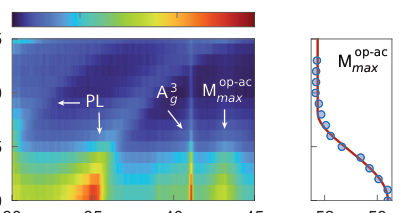
<figcaption class="paper-figure-caption"><b>Fig 4.</b> Fig. 4 Magnetic-field control of the exciton-mediated two-magnon emission in CrSBr. a, Raman spectra as a function of magnetic field B ∥ˆc at T = 3.5 K, P = 500 µW, and λ0 = 908 nm. b, zoom on the two-magnon spectral window of (a), highlighting the optical-magnon band edge M op−ac max . c, Integrated intensity of Mop−ac max versus B, with the quartic canting envelope (solid line).</figcaption>
</figure>
</div>

<p><strong>Summary.</strong> This paper introduces two-magnon Raman scattering as a novel, direct optical probe for measuring interlayer spin correlations in layered antiferromagnets. By analyzing the spectral features and observing the signal's collapse under an external magnetic field, the authors confirm that the measured signal originates specifically from the interlayer magnetic bonds. This technique opens a new window into the fundamental magnetic physics of van der Waals magnets.</p>
<p><strong>Why it may be interesting.</strong> This work provides a powerful, non-invasive optical tool (magnon-pair Raman spectroscopy) to probe fundamental, hard-to-measure quantities like interlayer spin correlations in 2D magnets, bridging the gap between theoretical models and experimental observation in strongly correlated systems.</p>
<details>
<summary>Detailed structure</summary>
<p><strong>Main problem.</strong> Interlayer spin correlation in layered quantum magnets is crucial for understanding their magnetic ground state and spin transport, but it has been experimentally difficult to measure directly.</p>
<p><strong>Main result.</strong> The authors report the first direct optical measurement of interlayer spin correlations using two-magnon Raman scattering in vdW antiferromagnets, confirming its magnetic origin and field dependence.</p>
<p><strong>Method.</strong> The study combines two-magnon Raman scattering spectroscopy with theoretical modeling based on the Fleury–Loudon interaction to probe the interlayer spin correlation function.</p>
<p><strong>Model / system.</strong> The system is a van der Waals antiferromagnet (AFM) like CrSBr, modeled by a spin Hamiltonian incorporating interlayer exchange coupling. The physics is analyzed using two-magnon continuum theory, which splits into three distinct polarization channels.</p>
<p><strong>Key observables.</strong> Two-magnon Raman intensity, which reports the integrated weight of the interlayer bond correlation ($\langle\hat{S}_A \cdot \hat{S}_B
angle$), and its dependence on external magnetic field ($B$).</p>
<p><strong>Important parameters / regimes.</strong> Interlayer exchange coupling ($J_{z2}$), magnetic field strength ($B$), and the energy gaps associated with optical and acoustic magnon modes (e.g., 46 meV, 82 meV).</p>
<p><strong>Assumptions / limitations.</strong> The analysis relies on the Fleury–Loudon light–matter interaction framework and assumes the two-magnon continuum can be accurately decomposed into distinct polarization channels.</p>
<p><strong>Figures summary.</strong> Figures illustrate the Raman setup, the theoretical decomposition of the two-magnon spectrum into three channels, and how the measured signal collapses or changes character when the magnetic field drives the system into different magnetic phases (AFM to FM).</p>
<p><strong>Paper structure.</strong> The paper establishes the physical necessity of measuring interlayer spin correlation, introduces the two-magnon Raman scattering technique as the probe, presents the theoretical framework linking the signal to the spin correlation function, and validates the method by showing its sensitivity to the magnetic ordering state via field-dependent measurements.</p>
</details>
<details>
<summary>Abstract</summary>
<p>Spin correlations govern numerous collective behaviors of quantum materials, underpinning exotic phenomena such as unconventional superconductivity and topological magnetism. In layered materials, the interlayer spin correlation is important because it characterizes the magnetic ground state and determines spin transport across the interface. Yet interlayer spin correlations have remained hard to measure directly, leaving one of the most basic quantities of two-dimensional magnetism out of experimental reach. Here we provide the first direct optical probe of interlayer spin correlations, using two-magnon Raman scattering in the van der Waals antiferromagnet (AFM) CrSBr, in remarkable agreement with a microscopic spin-wave model without any fitting parameter. Moreover, the two-magnon channel switches on only in the AFM state and vanishes when a magnetic field takes the crystal to a ferromagnetic state. We furthermore establish an exciton-mediated variant of the technique, where tuning the laser near the exciton resonance enhances the signal roughly tenfold due to the exciton's large oscillator strength. Magnon-pair Raman spectroscopy thus opens a direct optical window into interlayer spin correlations in van der Waals magnets, extendable to twisted bilayers and proximity-coupled heterostructures.</p>
</details>
<p><sub><a href="#top">↑ back to top</a></sub></p>

<p><a id="paper-2609.39448"></a></p>
<h3 id="parallel-classical-simulation-of-noisy-shallow-circuits-no-quantum-advantage-in-1d"><a href="http://arxiv.org/abs/2609.39448v1">Parallel classical simulation of noisy shallow circuits: no quantum advantage in 1D</a></h3>
<p><strong>Authors:</strong> Robert Koenig, Marco Tomamichel<br>
<strong>Type:</strong> theory · <strong>Category:</strong> numerical methods · <strong>PDF:</strong> <a href="https://arxiv.org/pdf/2609.39448v1">https://arxiv.org/pdf/2609.39448v1</a><br>
<strong>Analysis basis:</strong> full PDF text, analyzed in chunks
<strong>Topic relevance:</strong> <code>analog quantum simulation</code> <strong>1/5</strong> · <code>methods for driven-dissipative</code> <strong>1/5</strong></p>
<div class="figure-strip-hint">↔ Scroll figures horizontally</div>
<div class="paper-figures-scroll">
<figure class="paper-figure-card">
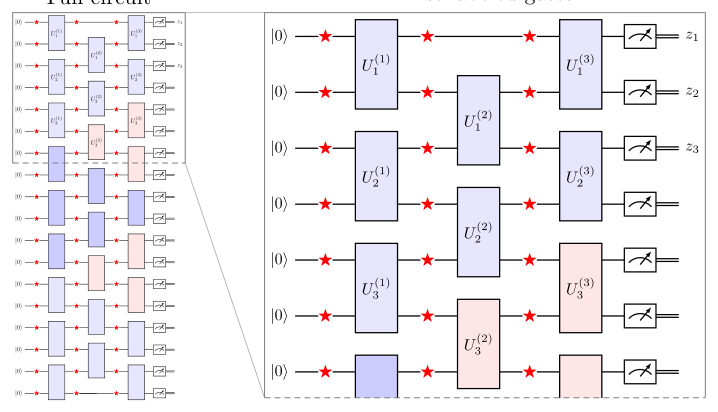
<figcaption class="paper-figure-caption"><b>Fig 1.</b> Figure 1: A three-layer brickwork circuit on 18 qubits, initialized in |018⟩and measured in the computational basis. The inset enlarges the first labeled gates. Each red star represents the channel Np: independently at every location, the qubit is completely depolarized with probability p. Gate colors indicate the groups used in the bilayer reduction of Fig. 5.</figcaption>
</figure>
<figure class="paper-figure-card">
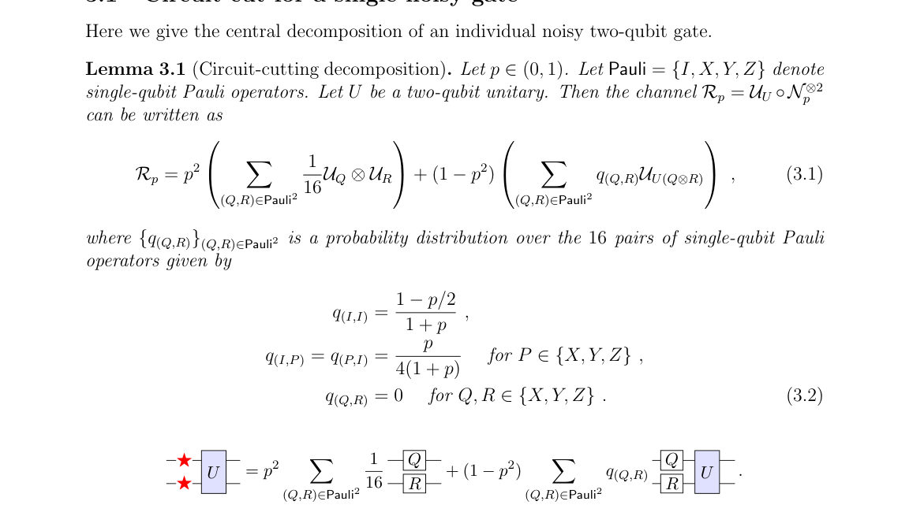
<figcaption class="paper-figure-caption"><b>Fig 2.</b> Figure 2: Circuit identity for Eq. (3.1), with Pauli = {I, X, Y, Z}. Each red star denotes the depolarizing channel Np. Circuits denote channels on arbitrary inputs, with time running from left to right. The first term, of total weight p2, contains only independent single-qubit Pauli gates and cuts the interaction. The second term, of total weight 1−p2, retains U. The probabilities inside the sums are 1/16 and q(Q,R) from Eq. (3.2).</figcaption>
</figure>
<figure class="paper-figure-card">
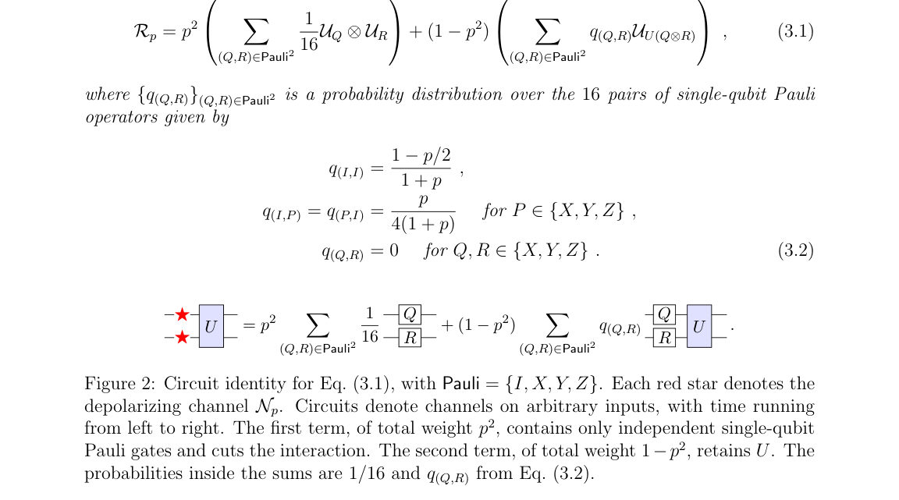
<figcaption class="paper-figure-caption"><b>Fig 3.</b> Fig. 2 schematically depicts this two-branch circuit identity. We note that only the second term in Eq. (3.1) depends on the unitary U considered.</figcaption>
</figure>
<figure class="paper-figure-card">
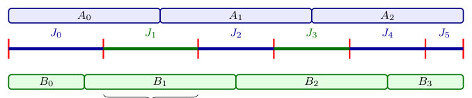
<figcaption class="paper-figure-caption"><b>Fig 4.</b> Figure 3: The two overlapping interval partitions. Red vertical lines mark cuts, including the physical boundaries. Each component is copied from one local sample: blue components from the unshifted partition and green components, which cross an unshifted boundary, from the shifted partition.</figcaption>
</figure>
<figure class="paper-figure-card">
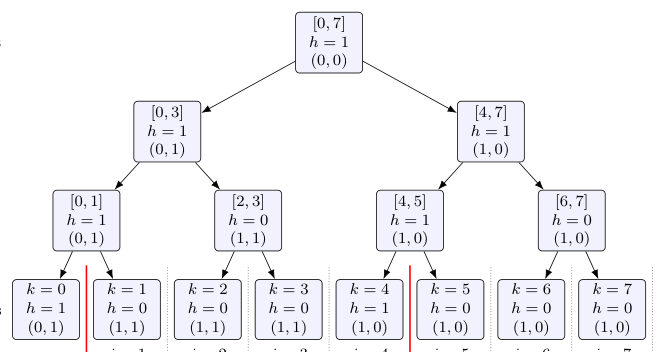
<figcaption class="paper-figure-caption"><b>Fig 5.</b> Figure 4: Message passing for two cut strings. The vertical lines mark the half-integer positions 1/2+k: solid red lines indicate E1/2+k = 1, and dotted black lines indicate E1/2+k = 0. For an internal vertex v, write I(v) = [av, bv] for the associated interval of cut indices. Each internal vertex displays I(v), the upward message h, and the downward pair (L, R).</figcaption>
</figure>
</div>

<p><strong>Summary.</strong> This paper provides a classical simulation algorithm for noisy shallow quantum circuits on a 1D lattice. By exploiting the structure imposed by depolarizing noise, the authors show that the problem can be mapped onto a randomized AC^0 circuit. This result demonstrates that for 1D systems, the quantum advantage previously claimed for noisy shallow circuits in higher dimensions does not hold.</p>
<p><strong>Why it may be interesting.</strong> It provides a concrete, constructive classical simulation technique for a class of quantum circuits, directly challenging the premise of quantum advantage in a specific, physically relevant setting (1D).</p>
<details>
<summary>Detailed structure</summary>
<p><strong>Main problem.</strong> The paper investigates whether a quantum advantage exists for simulating noisy, shallow quantum circuits in one dimension (1D) compared to classical computation.</p>
<p><strong>Main result.</strong> It shows that for 1D noisy circuits, the output distribution can be simulated by a randomized AC^0 circuit, ruling out the unconditional quantum advantage established for 2D/3D noisy shallow circuits.</p>
<p><strong>Method.</strong> The authors develop randomized parallel algorithms and construct equivalent randomized Boolean circuits (AC^0) to sample the output distribution of the noisy quantum circuit.</p>
<p><strong>Model / system.</strong> The model consists of quantum circuits with $d$ layers of nearest-neighbor two-qubit gates acting on $n$ qubits arranged linearly, subjected to independent depolarizing noise before each layer.</p>
<p><strong>Key observables.</strong> Total variation error ($\delta$), parallel runtime, and classical circuit depth/size.</p>
<p><strong>Important parameters / regimes.</strong> Circuit depth ($d$), system size ($n$), noise probability ($p$), and error tolerance ($\delta$).</p>
<p><strong>Assumptions / limitations.</strong> The result is specific to 1D geometry and depolarizing noise; the simulation relies on the local effect of noise cutting the circuit into independent pieces.</p>
<p><strong>Figures summary.</strong> Figure 1 illustrates a three-layer brickwork circuit on 18 qubits showing the depolarizing noise channel at each location.</p>
<p><strong>Paper structure.</strong> The paper progresses by analyzing the simulation complexity, first deriving bounds for general randomized Boolean circuits ($C_2$), then improving the structure to unbounded fan-in circuits ($C_\infty$), and finally achieving constant-depth simulation using lookup tables ($C_{lit}$).</p>
</details>
<details>
<summary>Abstract</summary>
<p>We consider quantum circuits consisting of $d$ layers of nearest-neighbor two-qubit gates acting on $n$ qubits arranged on a line, where every qubit is independently depolarized with a constant probability before each layer. We describe a randomized parallel algorithm which samples from the output distribution of any such circuit to within total variation error $δ$, with parallel runtime $2^{O(d)}\log\log(n/δ)$ and $n 2^{O(d)}$ elementary real-arithmetic operations. Without noise, the same approach gives an exact sampler with parallel runtime $O(\log n)$. For constant depth, we further show that the input/output behavior of the noisy quantum circuit is reproduced up to a constant error by a randomized $\mathsf{AC}^0$-circuit, that is, a Boolean circuit of polynomial size and constant depth with unbounded fan-in AND and OR gates and NOT gates. Consequently, every relation problem solved by a noisy constant-depth quantum circuit in one dimension is also solved, with essentially the same success probability, by a randomized $\mathsf{AC}^0$-circuit. This rules out, for noisy circuits in one dimension, the unconditional quantum advantage established for noisy shallow circuits in two and three dimensions, where polynomial-size classical circuits over the same gate set require depth $Ω(\log n/\log\log n)$. Our algorithm exploits the fact that depolarizing noise cuts a one-dimensional circuit into independent pieces of logarithmic width, each of which can be sampled exactly in parallel.</p>
</details>
<p><sub><a href="#top">↑ back to top</a></sub></p>

<p><a id="paper-2609.39992"></a></p>
<h3 id="predicting-properties-of-scrooge-ensembles-with-high-accuracy-and-low-sample-complexity"><a href="http://arxiv.org/abs/2609.39992v1">Predicting properties of Scrooge ensembles with high accuracy and low sample complexity</a></h3>
<p><strong>Authors:</strong> Yue Wu, Yuzhi Tong, Helen Propson, Yihui Quek, Liang Mao<br>
<strong>Type:</strong> theory · <strong>Category:</strong> statistical mechanics · <strong>PDF:</strong> <a href="https://arxiv.org/pdf/2609.39992v1">https://arxiv.org/pdf/2609.39992v1</a><br>
<strong>Analysis basis:</strong> full PDF text, analyzed in chunks
<strong>Topic relevance:</strong> <code>Keldysh / 2PI / non-Gaussian methods</code> <strong>1/5</strong> · <code>analog quantum simulation</code> <strong>1/5</strong></p>
<div class="figure-strip-hint">↔ Scroll figures horizontally</div>
<div class="paper-figures-scroll">
<figure class="paper-figure-card">
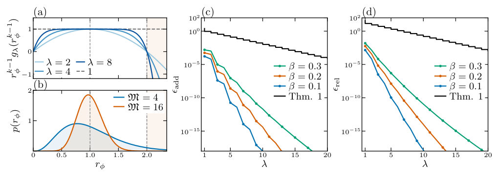
<figcaption class="paper-figure-caption"><b>Fig 1.</b> FIG. 1: Numerical results of the polynomial approximation for k = 2. (a) Comparison of gλ(rk−1 ϕ ) with 1/rk−1 ϕ for λ = 2, 4, 8. The curves show rk−1 ϕ gλ(rk−1 ϕ ), and the reference line is the constant 1. (b) Haar probability density of rϕ = D ⟨ϕ| ρ |ϕ⟩for ρ = ΠM/M, where ΠM is a rank-M projector, with D = 64 and M = 4, 16. The shaded region rϕ &gt; 2 marks the tail where increasing λ amplifies the polynomial remainder. (c,d) Additive and relative errors, ϵx = ∆x 2,λ, for Gibbs states of the periodic Nsite = 12 transverse-field Ising chain at J = h = 1 and β = 0.1, 0.2, 0.3. Black staircases show the order prescription in Eq. (15). We use Cadd = e11/12 and Crel = 233/8e19/24 from Appendix...</figcaption>
</figure>
<figure class="paper-figure-card">
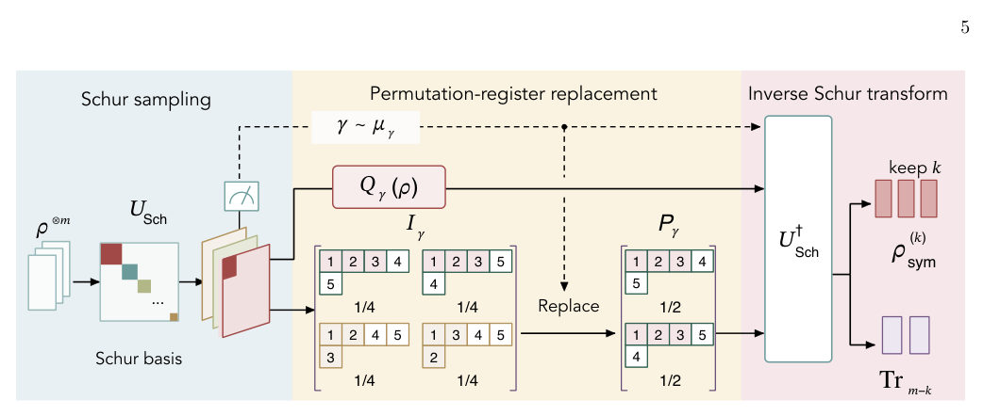
<figcaption class="paper-figure-caption"><b>Fig 2.</b> FIG. 2: Schematic illustration of our implementation of symmetric subspace projection. The first step applies the Schur transform to ρ⊗m and measures the sector label, obtaining γ with probability µγ(ρ). Then the maximally</figcaption>
</figure>
</div>

<p><strong>Summary.</strong> This work introduces efficient theoretical and computational tools to analyze the statistical properties of the Scrooge ensemble, which is key in quantum many-body physics. The authors overcome the difficulty posed by a non-polynomial integrand by developing a highly accurate polynomial approximation. This leads to a quantum algorithm that estimates ensemble moments with significantly reduced sample complexity.</p>
<p><strong>Why it may be interesting.</strong> The development of efficient tools to calculate high-order moments for complex quantum ensembles provides crucial theoretical machinery for analyzing quantum many-body dynamics and quantum information processing.</p>
<details>
<summary>Detailed structure</summary>
<p><strong>Main problem.</strong> The paper addresses the challenge of analyzing and implementing the 'Scrooge moments' ($\chi^{(k)}_{	ext{Sc}}(
ho)$), which characterize the statistical properties of the Scrooge ensemble.</p>
<p><strong>Main result.</strong> They developed a polynomial approximation for these moments with exponentially improving error bounds and constructed an efficient quantum algorithm to estimate expectation values using low sample complexity.</p>
<p><strong>Method.</strong> The core method involves approximating a non-polynomial Haar integrand using a tunable polynomial expansion, which is then implemented via quantum algorithms leveraging Schur transforms and block encoding techniques.</p>
<p><strong>Model / system.</strong> The study focuses on the Scrooge ensemble, $    ext{Sc}(
ho)$, defined as the maximally random ensemble whose average density matrix is $
ho$. This has applications in quantum many-body dynamics.</p>
<p><strong>Key observables.</strong> Scrooge $k$-th moment operator ($\chi^{(k)}_{	ext{Sc}}(
ho)$) and observable expectation values $ ext{Tr}[\chi^{(k)} O_k]$.</p>
<p><strong>Important parameters / regimes.</strong> Moment order $k$, target error $\epsilon$, and polynomial approximation order $\lambda$.</p>
<p><strong>Assumptions / limitations.</strong> The analysis relies on polynomial approximations derived from Taylor expansions and the efficient implementation of quantum subroutines like symmetric subspace projection.</p>
<p><strong>Figures summary.</strong> Figure 1 compares the polynomial approximation $g_\lambda(r_\phi^{k-1})$ to the true inverse term $1/r_\phi^{k-1}$ for various orders $\lambda$, demonstrating convergence.</p>
<p><strong>Paper structure.</strong> The paper progresses from identifying the mathematical obstacle (non-polynomial integrand) to proposing a polynomial approximation, followed by developing the quantum algorithm for estimation, and finally providing a detailed block-encoding construction for the moments.</p>
</details>
<details>
<summary>Abstract</summary>
<p>The Scrooge ensemble associated with a density matrix $ρ$ is the maximally random ensemble whose average density matrix is $ρ$. It has attracted growing interest for its applications to quantum many-body dynamics and quantum information. The intrinsic statistical properties of the Scrooge ensembles are encoded in their higher-order moments, yet they are nontrivial to analyze and prepare for they feature a non-polynomial Haar integrand, blocking direct use of Haar integration machinery. Existing physical mechanisms to sample multiple copies of states from the Scrooge ensembles, meanwhile, typically require costly postselection, rendering them inefficient for large system size. In this work, we develop efficient and accurate methods for analyzing and implementing Scrooge moments. We first introduce a polynomial approximation to the Scrooge $k$-th moments whose error is tunable down to a threshold that improves from inverse polynomial to exponential in $1/||ρ||_\infty$ over previous results. Building on our approximation, we then give the first efficient quantum algorithm that estimates observable expectation values using $\widetilde{\mathcal{O}}(k^3/ε^5)$ copies of $ρ$ for any target error $ε$ above this threshold. We further provide a construction of a block encoding of the Scrooge $k$-th moment when the preparation circuit of $ρ$ is known. Of independent interest could be a key subroutine in our algorithms, which efficiently implements projection onto the $k$-fold symmetric subspace for $ρ^{\otimes k}$ using $\mathcal{O}(k^3/ε^2)$ samples of $ρ$, avoiding the naive $k!$ postselection cost of such a projection. These results provide new tools for both the theoretical analysis and practical prediction of properties of Scrooge ensembles, with potential applications to quantum many-body dynamics and quantum information processing.</p>
</details>
<p><sub><a href="#top">↑ back to top</a></sub></p>

<p><a id="paper-2609.39175"></a></p>
<h3 id="tunability-of-the-structural-and-magnetic-transition-in-kagome-material-prirmath1610mathbmath1611math"><a href="http://arxiv.org/abs/2609.39175v1">Tunability of the structural and magnetic transition in kagome material: PrIr$_3$B$_2$</a></h3>
<p><strong>Authors:</strong> Gayathri V, Irshad K A, Sathishkumar M, Boby Joseph, S. Manni<br>
<strong>Type:</strong> experiment · <strong>Category:</strong> strongly correlated electrons · <strong>PDF:</strong> <a href="https://arxiv.org/pdf/2609.39175v1">https://arxiv.org/pdf/2609.39175v1</a><br>
<strong>Analysis basis:</strong> full PDF text, analyzed in chunks
<strong>Topic relevance:</strong> <code>analog quantum simulation</code> <strong>1/5</strong> · <code>quantum measurements</code> <strong>1/5</strong></p>
<div class="figure-strip-hint">↔ Scroll figures horizontally</div>
<div class="paper-figures-scroll">
<figure class="paper-figure-card">
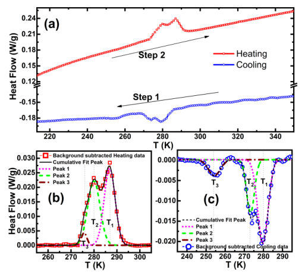
<figcaption class="paper-figure-caption"><b>Fig 1.</b> FIG. 1. (a) DSC heat flow in the heating and cooling cy- cle. The arrows indicate the sequence of measurements, where cooling data is collected in step 1 followed by the heating data in step 2. Presence of three peaks after the background sub- traction and deconvolution of the (b) heating and (c) cooling cycles.</figcaption>
</figure>
<figure class="paper-figure-card">
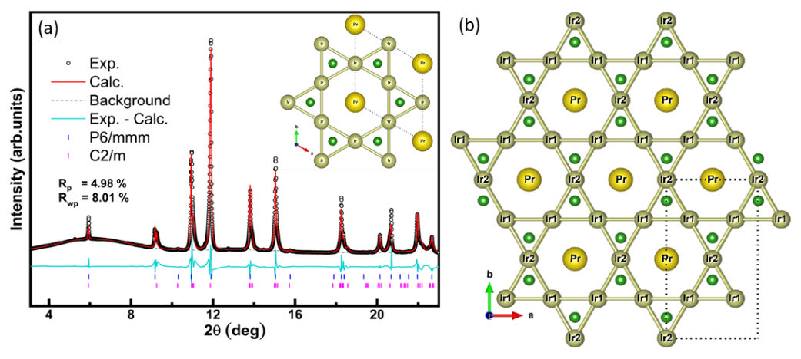
<figcaption class="paper-figure-caption"><b>Fig 2.</b> FIG. 2. (a) Results of the Rietveld refinement analysis of the synchrotron powder XRD pattern of the powdered PIB single crystal at ambient pressure and room temperature. Inset here shows the crystallographic structure of the hexagonal phase along the ab plane revealing Ir atoms forming the kagome lattice. Green spheres are the B atoms. Dotted rectangle indicates the unit-cell projection. (b) The crystallographic structure along the ab plane of the monoclinic phase.</figcaption>
</figure>
<figure class="paper-figure-card">
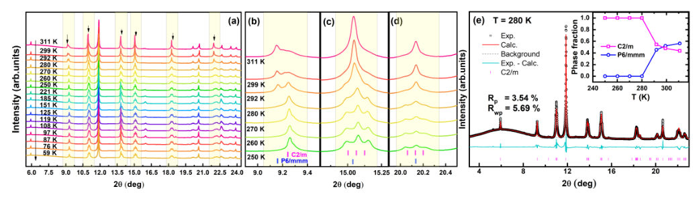
<figcaption class="paper-figure-caption"><b>Fig 3.</b> FIG. 3. (a) Evolution of the XRD pattern with temperature. Structural transition from mixed phase to purely monoclinic phase highlighted around the peak at (b) 9.2◦, (c) 15◦, (d) 20.15◦near the transition temperature. (e) Synchrotron powder XRD pattern obtained for powdered single crystal at 280 K at ambient pressure. The inset in(e) shows the variation of phase fractions of two coexisting phases with temperature in the cooling cycle in PIB.</figcaption>
</figure>
<figure class="paper-figure-card">
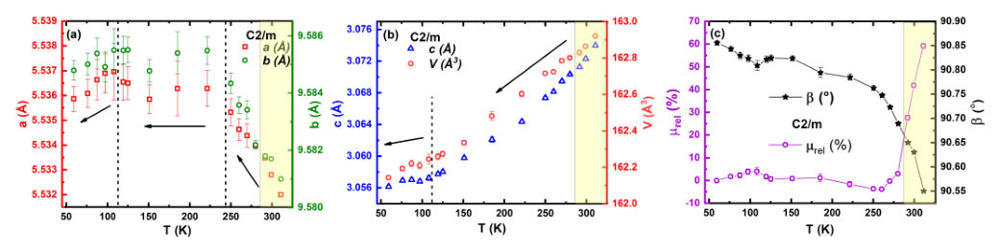
<figcaption class="paper-figure-caption"><b>Fig 4.</b> FIG. 4. Variation of the lattice parameters of monoclinic ((a)-(c)) phase as a function of temperature obtained from the Rietveld refinement of the temperature-dependent XRD pattern. The shaded region in (a), (b), and (c) indicate the variation of the lattice parameters of monoclinic structure in the mixed phase region.</figcaption>
</figure>
<figure class="paper-figure-card">
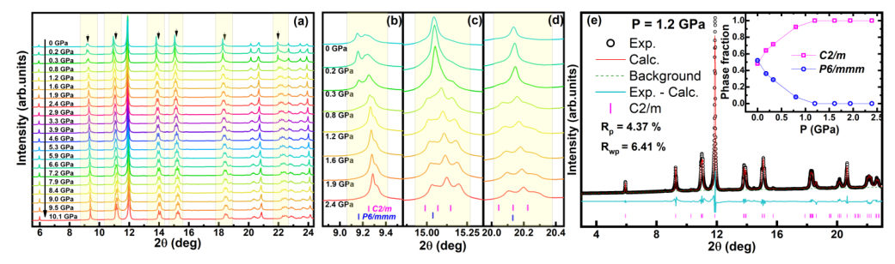
<figcaption class="paper-figure-caption"><b>Fig 5.</b> FIG. 5. (a) Evolution of the XRD pattern under external pressure up to 10 GPa. Structural transition from mixed phase to purely monoclinic phase highlighted around the peak at (b) 9.2◦, (c) 15◦, (d) 20.15◦at various applied pressures. (e) Synchrotron powder XRD pattern obtained for powdered PIB single crystal at 1.2 GPa at room temperature. The inset in (e) shows the variation of the phase fractions of the two coexisting phases in PIB under application of external pressure.</figcaption>
</figure>
</div>

<p><strong>Summary.</strong> This work reports on the structural and electronic phase diagram of the kagome magnet PrIr3B2, revealing a structural transition at 280 K correlated with a two-step metal-insulator-metal transition. Using XRD, resistivity, and magnetic measurements, the study suggests that charge ordering plays a crucial role in stabilizing these complex electronic and structural ground states.</p>
<p><strong>Why it may be interesting.</strong> The strong coupling observed between structural transitions, electronic transitions (MIM), and magnetic ordering in a correlated material like PrIr3B2 provides a rich playground for understanding emergent quantum phases in strongly correlated electron systems.</p>
<details>
<summary>Detailed structure</summary>
<p><strong>Main problem.</strong> The study investigates the temperature and pressure tunability of structural transformations and associated two-step metal-insulator-metal (MIM) transitions in the kagome lattice compound PrIr3B2.</p>
<p><strong>Main result.</strong> The compound undergoes a structural transition from hexagonal to monoclinic phase at T = 280 K (ambient pressure), which correlates with an anomalous two-step MIM transition and suggests the presence of charge order states.</p>
<p><strong>Method.</strong> The research employs synchrotron X-ray powder diffraction (XRD) to track structural changes under varying temperature and pressure, complemented by electrical resistivity and DSC measurements.</p>
<p><strong>Model / system.</strong> The physical system is PrIr3B2, a kagome lattice magnet, whose electronic and structural ground states are being mapped out by observing transitions between different crystalline phases.</p>
<p><strong>Key observables.</strong> Structural phases (monoclinic vs. hexagonal), two-step MIM transition in resistivity, lattice parameters (a, b, c), and magnetic susceptibility/heat capacity.</p>
<p><strong>Important parameters / regimes.</strong> Temperature (T), Pressure (P), and magnetic field strength (H). Key transitions occur around 280 K and 110 K.</p>
<p><strong>Assumptions / limitations.</strong> The observed anomalies are hypothesized to be due to a charge order state causing a partially gapped Fermi surface, although the exact mechanism remains unclear.</p>
<p><strong>Figures summary.</strong> Figures show XRD patterns tracking structural phase changes with T and P; resistivity plots highlight the two-step MIM transition; DSC curves reveal thermal events.</p>
<p><strong>Paper structure.</strong> The paper systematically analyzes structural transitions using XRD under T and P variations, correlates these structural changes with electronic transitions observed via resistivity measurements, and investigates the magnetic response using magnetization and heat capacity measurements.</p>
</details>
<details>
<summary>Abstract</summary>
<p>We report the temperature and pressure tunability of an unusual structural transformation associated with a two-step metal-insulator-metal (MIM) transition in the kagome lattice compound PrIr$_3$B$_2$ using synchrotron X-ray powder diffraction. At ambient conditions of temperature and pressure, the monoclinic ($C2/m$) and the hexagonal ($P6/mmm$) phases coexist as twinned structure in the crystal. As the temperature (pressure) is decreased (increased), PrIr$_3$B$_2$ converts fully to monoclinic structure at $T =$ 280 K (at ambient pressure) and $P =$ 1.2 GPa (at room temperature). Temperature dependence of the monoclinic structure at ambient pressure presents complex evolution of lattice parameters with weak but clearly discernable anomalies at \SI{\sim 250} {\K} and \SI{\sim 110} {\K}, which are correlated with the second MIM transition and the linear to nonlinear temperature-dependent resistivity crossover, respectively. These anomalies are likely due to some charge order state causing a partially gapped Fermi surface. The magnetic phase diagram of PrIr$_3$B$_2$ is also investigated from anisotropic measurements. At 10 K, a superzone gap opens near the antiferromagnetic transition, which does not close even in the polarized state. From the tunability of the crystal structure and magnetic and electronic ground state, promising electronic orders are indicated in this kagome metallic magnet.</p>
</details>
<p><sub><a href="#top">↑ back to top</a></sub></p>

<p><a id="paper-2609.39806"></a></p>
<h3 id="math1622mathsr-measurements-of-3d-ising-ferromagnetism-in-bulk-femath1623mathgetemath1624math-crystals"><a href="http://arxiv.org/abs/2609.39806v1">$μ$SR measurements of 3D Ising ferromagnetism in bulk Fe$_3$GeTe$_2$ crystals</a></h3>
<p><strong>Authors:</strong> M. N. Wilson, J. Huang, T. J. Hicken, D. A. Mayoh, B. M. Huddart, G. Balakrishnan, T. Lancaster<br>
<strong>Type:</strong> experiment · <strong>Category:</strong> strongly correlated electrons · <strong>PDF:</strong> <a href="https://arxiv.org/pdf/2609.39806v1">https://arxiv.org/pdf/2609.39806v1</a><br>
<strong>Analysis basis:</strong> full PDF text, analyzed in chunks
<strong>Topic relevance:</strong> <code>quantum measurements</code> <strong>1/5</strong></p>
<div class="figure-strip-hint">↔ Scroll figures horizontally</div>
<div class="paper-figures-scroll">
<figure class="paper-figure-card">
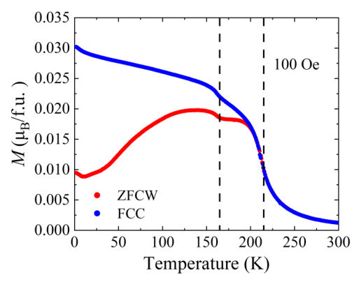
<figcaption class="paper-figure-caption"><b>Fig 1.</b> FIG. 1. Magnetization measurements of a Fe3GeTe2 crystal with a 100 Oe magnetic field oriented along the c-axis. Dashed lines in- dicate approximate temperatures of the magnetic transitions (170 K and 220 K). Red data points are measured on warming after zero field cooling to 2 K, and blue points are measured while field cooling from 300 K.</figcaption>
</figure>
<figure class="paper-figure-card">
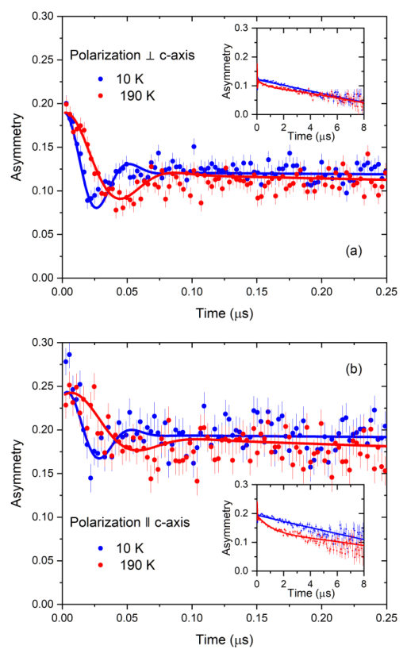
<figcaption class="paper-figure-caption"><b>Fig 2.</b> FIG. 3. Example ZF µSR data Fe3GeTe2, shown at 10 K (blue) and 190 K (red) measuring (a) polarization perpendicular to the c- direction (SR mode), and (b) polarization parallel to the c-direction of (NSR mode). Solid lines show fits to Eq. 1. Insets to each panel show the same data over a longer time range (0 - 8 µs), highlighting the slow relaxation of the signal.</figcaption>
</figure>
<figure class="paper-figure-card">
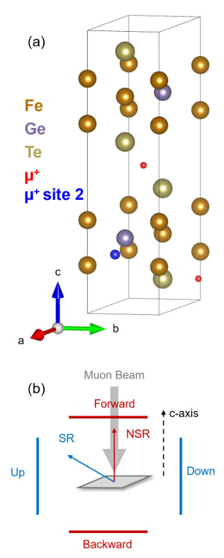
<figcaption class="paper-figure-caption"><b>Fig 3.</b> FIG. 2. (a) Crystal structure of Fe3GeTe2 illustrating the calculated muon sites (red; site 2 is shown as a larger blue sphere). (b) Ge- ometry of the muon-spin relaxation measurements showing the ini- tial muon-spin direction for non-spin-rotated (NSR) and spin-rotated (SR) modes, detector orientations, and the c-axis of the sample.</figcaption>
</figure>
<figure class="paper-figure-card">
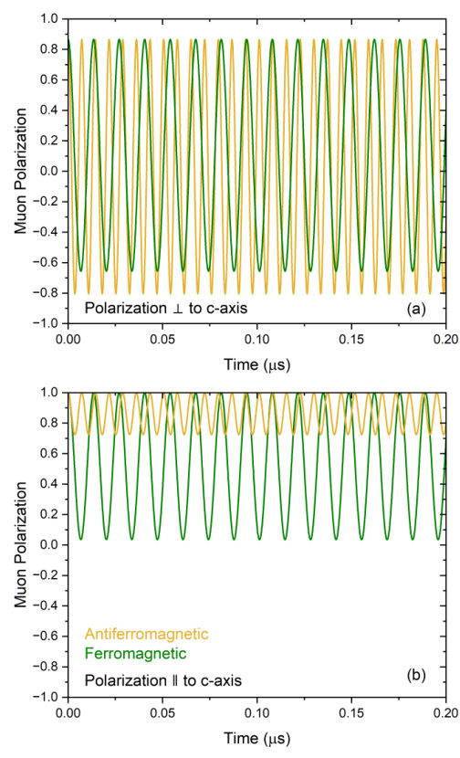
<figcaption class="paper-figure-caption"><b>Fig 4.</b> FIG. 4. Simulated spectra for ferromagnetic and antiferromagnetic magnetic structures of Fe3GeTe2, calculated for site 2 from Table I. (a) Muon-spin polarization perpendicular to the c-axis (parallel to a- axis). (b) Muon-spin polarization parallel to the c-axis.</figcaption>
</figure>
<figure class="paper-figure-card">
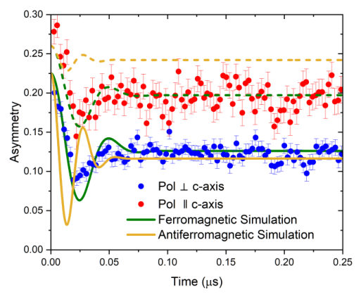
<figcaption class="paper-figure-caption"><b>Fig 5.</b> FIG. 5. Muon-spin relaxation data shown at 10 K, measuring the polarization parallel to c in NSR mode (red), and polarization per- pendicular to c in SR mode (blue). Curves show the simulated µSR spectra for the ferromagnetic (green) and antiferromagnetic (yellow) states. Dashed lines show simulations for polarization parallel to c- axis, solid lines for polarization perpendicular to c.</figcaption>
</figure>
</div>

<p><strong>Summary.</strong> This work uses $\mu$SR and magnetometry on $    ext{Fe}_3   ext{GeTe}_2$ to investigate its magnetic phase transitions. The authors argue that the material remains a 3D Ising ferromagnet down to 2 K, refuting previous claims of an antiferromagnetic transition at 170 K. The observed feature is instead attributed to domain-freezing dynamics.</p>
<p><strong>Why it may be interesting.</strong> The use of $\mu$SR to probe local magnetic fields and distinguish between competing magnetic ground states (FM vs. AFM) in a highly anisotropic, itinerant magnet is relevant to understanding magnetic ordering in low-dimensional quantum materials.</p>
<details>
<summary>Detailed structure</summary>
<p><strong>Main problem.</strong> The study aims to resolve the debate regarding the magnetic state evolution in the itinerant ferromagnet $    ext{Fe}_3   ext{GeTe}_2$, specifically whether a transition between ferromagnetism and antiferromagnetism occurs at low temperatures.</p>
<p><strong>Main result.</strong> The measurements demonstrate that $    ext{Fe}_3   ext{GeTe}_2$ exhibits 3D Ising-like ferromagnetism across the entire temperature range studied, and the feature previously thought to be an antiferromagnetic transition is reinterpreted as a domain-freezing transition.</p>
<p><strong>Method.</strong> The research combines magnetometry (ZFC/FCC) with muon-spin relaxation ($\mu$SR) measurements performed in zero applied field, supplemented by DFT calculations for muon stopping sites.</p>
<p><strong>Model / system.</strong> The physical system is the layered van der Waals ferromagnet $  ext{Fe}_3   ext{GeTe}_2$. The analysis compares experimental $\mu$SR data against theoretical simulations for both ferromagnetic and antiferromagnetic magnetic structures.</p>
<p><strong>Key observables.</strong> Muon polarization relaxation rates (NSR and SR modes), magnetization vs. temperature ($dM/dT$), and the temperature dependence of the internal magnetic field $B(T)$.</p>
<p><strong>Important parameters / regimes.</strong> Curie temperature ($T_C \approx 220	ext{ K}$), the temperature of interest ($170	ext{ K}$), and the magnetic anisotropy inherent to the layered structure.</p>
<p><strong>Assumptions / limitations.</strong> The $\mu$SR measurement probes the bulk material ($\sim 200\ \mu	ext{m}$ depth), and the analysis relies on fitting the temperature dependence of the internal field to critical power laws.</p>
<p><strong>Figures summary.</strong> Figures show magnetization curves indicating transitions at 170 K and 220 K. $\mu$SR data illustrate the relaxation behavior in both polarization modes at different temperatures, which are compared against simulations for competing magnetic states.</p>
<p><strong>Paper structure.</strong> The paper systematically presents magnetometry and $\mu$SR data to challenge the assumption of an AF transition at 170 K. It uses detailed analysis of the temperature dependence of the internal field and compares results against theoretical models for both FM and AFM states to conclude the persistence of 3D Ising ferromagnetism.</p>
</details>
<details>
<summary>Abstract</summary>
<p>Fe$_3$GeTe$_2$ is a quasi-two-dimensional itinerant ferromagnet with a van-der-Waals layered structure that exhibits substantial magnetic anisotropy. In bulk samples, this material becomes magnetically ordered below 220~K, while in thin samples, the gate-tunability of the ferromagnetic moment has attracted significant interest. Alongside high-temperature ferromagnetism, a low-temperature magnetic state occurs whose nature has not been conclusively identified, with some studies suggesting a transition between ferromagnetism and antiferromagnetism with temperature. Here we present magnetometry and $μ$SR data that demonstrate that Fe$_3$GeTe$_2$ exhibits three-dimenional Ising-like ferromagnetism over the entire temperature range between $T_{C}=220$~K and 2~K. The feature at 170~K that has previously been proposed to be a transition to antiferromagnetism is instead likely to represent a domain-freezing transition.</p>
</details>
<p><sub><a href="#top">↑ back to top</a></sub></p>

<p><a id="paper-2609.39747"></a></p>
<h3 id="a-depolarizing-choir-sings-in-gaussian-harmony"><a href="http://arxiv.org/abs/2609.39747v1">A depolarizing choir sings in Gaussian harmony</a></h3>
<p><strong>Authors:</strong> Rabsan Galib Ahmed, Sujeet Bhalerao, Sungjai Lee, Felix Leditzky, Debbie Leung, Luke Schaeffer, Graeme Smith<br>
<strong>Type:</strong> theory · <strong>Category:</strong> quantum information and computing · <strong>PDF:</strong> <a href="https://arxiv.org/pdf/2609.39747v1">https://arxiv.org/pdf/2609.39747v1</a><br>
<strong>Analysis basis:</strong> full PDF text, analyzed in chunks
<strong>Topic relevance:</strong> <code>correlated / nonlocal dissipation</code> <strong>1/5</strong></p>
<div class="figure-strip-hint">↔ Scroll figures horizontally</div>
<div class="paper-figures-scroll">
<figure class="paper-figure-card">
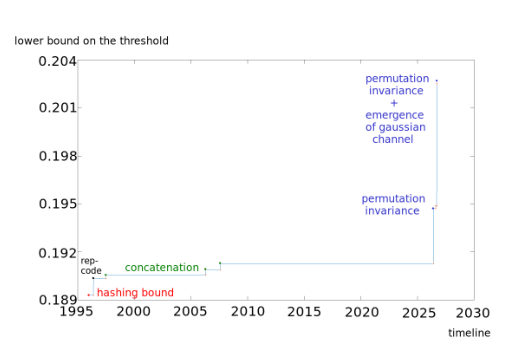
<figcaption class="paper-figure-caption"><b>Fig 1.</b> FIG. 1. Best known lower bounds for the threshold as a func- tion of time (in calendar years) and the coding / analysis giving rise to them.</figcaption>
</figure>
</div>

<p><strong>Summary.</strong> This paper analyzes the noise threshold for the quantum capacity of the qubit depolarizing channel by demonstrating its asymptotic equivalence to a Gaussian channel. By leveraging this connection, the authors derive a significantly improved lower bound for the noise threshold. This work offers a new theoretical perspective on symmetric quantum codes under noise.</p>
<p><strong>Why it may be interesting.</strong> The novel link established between discrete depolarizing noise and continuous Gaussian channels provides a powerful new mathematical tool for analyzing quantum error correction thresholds in open quantum systems.</p>
<details>
<summary>Detailed structure</summary>
<p><strong>Main problem.</strong> The primary goal is to determine the noise threshold ($p_{th}$) for achieving positive quantum capacity for the qubit depolarizing channel.</p>
<p><strong>Main result.</strong> The authors derive a new, improved lower bound on the noise threshold, establishing $p_{th} \gtrsim 0.2029$, by linking the depolarizing channel to an emergent Gaussian channel.</p>
<p><strong>Method.</strong> The analysis uses representation theory (Schur-Weyl duality) to show that the depolarizing channel action asymptotically approximates a Gaussian thermal attenuator channel, allowing the use of Gaussian channel bounds.</p>
<p><strong>Model / system.</strong> The system under study is the qubit depolarizing channel, $D_p$, acting on symmetric subspaces of multiple qubits. The analysis relates this discrete channel to continuous bosonic Gaussian channels.</p>
<p><strong>Key observables.</strong> Quantum capacity ($Q$), Coherent Information ($I_c$), and the noise threshold ($p_{th}$).</p>
<p><strong>Important parameters / regimes.</strong> Noise parameter $p$ (or transmissivity $\eta$), and the number of channel uses $M 	o \infty$.</p>
<p><strong>Assumptions / limitations.</strong> The analysis relies on the asymptotic equivalence between the depolarizing channel and the Gaussian channel, and the use of concentration inequalities for bounding errors.</p>
<p><strong>Figures summary.</strong> Figure 1 (mentioned) illustrates the historical improvement of the lower bound for the threshold over time.</p>
<p><strong>Paper structure.</strong> The paper proceeds by analyzing the action of the depolarizing channel on symmetric subspaces, showing its equivalence to a Gaussian channel, and then using the coherent information of the Gaussian channel to establish a rigorous lower bound on the quantum capacity threshold.</p>
</details>
<details>
<summary>Abstract</summary>
<p>We study the noise threshold for positive quantum capacity for the qubit depolarizing channel. We explore analytically the action of the qubit depolarizing channel on the symmetric subspaces of the input qubits, in the limit of asymptotically many uses of the channel. We observe the emergence of a bosonic Gaussian channel. Furthermore, the codes previously developed for the depolarizing channel can be translated to codes for the emergent Gaussian channel, and it is easier to further optimize these codes for the simpler emergent Gaussian channel. Translating these codes back to the depolarizing channel leads to extremely good input states for the coherent information of the depolarizing channel producing new lower bounds on the noise threshold for positive capacity. In addition to improved lower bounds on the threshold, this newly found link between depolarizing noise and Gaussian channels offers a novel perspective contributing to our understanding of these symmetric codes.</p>
</details>
<p><sub><a href="#top">↑ back to top</a></sub></p>

<p><a id="paper-2609.40226"></a></p>
<h3 id="a-physical-and-universal-model-of-bosonic-computations-with-solovay-kitaev-theorem"><a href="http://arxiv.org/abs/2609.40226v1">A physical and universal model of bosonic computations with Solovay-Kitaev theorem</a></h3>
<p><strong>Authors:</strong> Dorian Rudolph, Arsalan Motamedi, Dhruva Sambrani, Hamid Reza Naeij, Ulysse Chabaud, Sevag Gharibian, Saeed Mehraban<br>
<strong>Type:</strong> theory · <strong>Category:</strong> quantum information and computing · <strong>PDF:</strong> <a href="https://arxiv.org/pdf/2609.40226v1">https://arxiv.org/pdf/2609.40226v1</a><br>
<strong>Analysis basis:</strong> full PDF text, analyzed in chunks
<strong>Topic relevance:</strong> <code>analog quantum simulation</code> <strong>1/5</strong></p>
<div class="figure-strip-hint">↔ Scroll figures horizontally</div>
<div class="paper-figures-scroll">
<figure class="paper-figure-card">
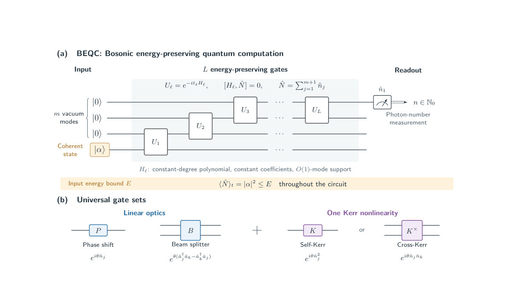
<figcaption class="paper-figure-caption"><b>Fig 1.</b> Figure 1: Schematic depiction of BEQC. (a) A bosonic energy-preserving computation consists of a sequence of energy-preserving gates applied to an input vacuum state, together with a coherent state supplying the energy for the computation, while the outcome is obtained by measuring the photon number of one output mode. (b) Two universal sets of gates for BEQC, both of which obey an energy-preserving Solovay–Kitaev theorem (Theorem 1.4).</figcaption>
</figure>
<figure class="paper-figure-card">
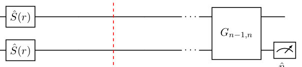
<figcaption class="paper-figure-caption"><b>Fig 2.</b> Figure 2: Circuit Cn from Theorem 3.6. The Gaussian preparation stage first squeezes all modes, then displaces mode 0. U then applies a sequence of Gj−1,j = exp(−iˆq2 j−1ˆpj) to perform repeated squaring on position, as Gj−1,j displaces mode j by the squared position of mode j −1.</figcaption>
</figure>
<figure class="paper-figure-card">
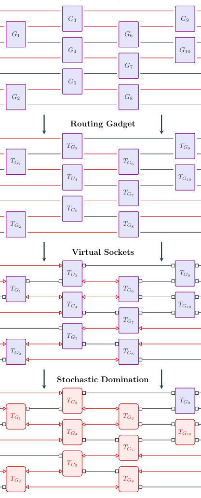
<figcaption class="paper-figure-caption"><b>Fig 3.</b> Figure 3: A schematic of the sequence of mappings from the Static Initialization Noise Error (SINE) model (Definition 7.17) to the Uncorrelated Gate Error model. Red components signify failing components. The Routing Gadgets make the qubit failures into wire section failures. Virtual sockets are then introduced, which are marked failing if the edge they connect to fails. Finally, gates are marked such that the gate must fail if any of its sockets fail. Note the failure of TG10, which occurs in spite of all the sockets passing, indicative of the stochastic dominance. The virtual socket failure rate is √p; the resulting virtual gate failure rate is 1 −(1 −√p)∆, where ∆is the maximum gate...</figcaption>
</figure>
</div>

<p><strong>Summary.</strong> This paper proposes Bosonic Energy-Preserving Quantum Computation (BEQC) to fix the unphysical energy growth issues found in standard bosonic quantum models. By restricting gates to energy-preserving Hamiltonians, BEQC creates a physically grounded, universal model. The work establishes its computational equivalence to BQP and derives a Solovay-Kitaev theorem for this constrained setting.</p>
<p><strong>Why it may be interesting.</strong> It directly addresses the physical realizability of continuous-variable quantum computation, providing a rigorous framework that constrains models to physically sensible energy bounds while retaining computational power.</p>
<details>
<summary>Detailed structure</summary>
<p><strong>Main problem.</strong> Standard bosonic quantum computation models suffer from unphysical energy growth, undermining their theoretical robustness and algorithmic utility.</p>
<p><strong>Main result.</strong> The authors introduce Bosonic Energy-Preserving Quantum Computation (BEQC), a physically grounded model that is computationally universal and achieves a Solovay-Kitaev theorem.</p>
<p><strong>Method.</strong> The work involves defining a constrained computational model based on energy-preserving Hamiltonians and applying advanced quantum simulation and approximation techniques.</p>
<p><strong>Model / system.</strong> The model is BEQC, which constrains gate operations to be generated by energy-preserving Hamiltonians, ensuring energy is supplied only by input coherent states.</p>
<p><strong>Key observables.</strong> Energy (average photon number), computational power (BQP equivalence), and approximation error bounds.</p>
<p><strong>Important parameters / regimes.</strong> Input coherent state amplitude ($\alpha$), computational time ($t$), and desired precision ($\epsilon$).</p>
<p><strong>Assumptions / limitations.</strong> The primary assumption is that physical computation must be energy-preserving, which constrains the Hamiltonian structure.</p>
<p><strong>Figures summary.</strong> Figure 1 schematically depicts BEQC using energy-preserving gates and shows universal gate sets obeying a Solovay-Kitaev theorem. Other figures detail error bounds and simulation protocols.</p>
<p><strong>Paper structure.</strong> The paper first identifies the flaw in existing models (LB) due to energy blowup, proposes the BEQC framework, proves its computational power and universality (including the Solovay-Kitaev result), and then details the technical implementation for simulating dynamics (e.g., Bose-Hubbard model) using energy-preserving approximations.</p>
</details>
<details>
<summary>Abstract</summary>
<p>Bosonic quantum systems are among the leading architectures for quantum information processing, offering continuous-variable degrees of freedom with strong error-correction capabilities. However, standard bosonic quantum computation models such as the Lloyd-Braunstein [Lloyd and Braunstein, 1999] and hybrid oscillator-qubit models [Brenner, Dias, and Koenig, 2025; Liu et al., 2026] permit dramatic energy growth, leading to unphysical computational power and the breakdown of fundamental algorithmic tools such as universal and efficient compilation [Brenner et al., 2026; Rudolph et al., 2025]. To address this, we introduce a new model of bosonic quantum computation, Bosonic Energy-Preserving Quantum Computation (BEQC), in which energy is treated as a computational resource. Namely, energy is supplied solely through input coherent states, and all gates are generated by energy-preserving Hamiltonians. Thus, by construction, dramatic energy growth is impossible, making the model physically grounded.   We next show that BEQC is a computationally robust and universal model in many respects, including: (1. Computational power) BEQC efficiently simulates all polynomial-energy computations in existing models, and exactly recovers BQP in the polynomial energy setting. It further admits several complexity-theoretic upper bounds when varying the energy, precision, and space parameters of the model. (2. Universal gate sets and state synthesis) BEQC has natural universal gate sets based on linear optics and Kerr interactions. In particular, we obtain a Solovay-Kitaev theorem which circumvents previous no-go results. We give various applications, including (a) a protocol for engineering GKP states with rigorous preparation guarantees, (b) Fock state preparation to exponential precision, and (c) native Fock space simulation of any qubit-based unitary.</p>
</details>
<p><sub><a href="#top">↑ back to top</a></sub></p>

<p><a id="paper-2609.39172"></a></p>
<h3 id="a-width-matched-comparison-of-hybrid-quantum-classical-self-supervised-learning-for-fingerprint-recognition"><a href="http://arxiv.org/abs/2609.39172v1">A Width-Matched Comparison of Hybrid Quantum-Classical Self-Supervised Learning for Fingerprint Recognition</a></h3>
<p><strong>Authors:</strong> Maria S. Edwards, Kidwell Dlamini, Pin-An Lin, Wen-Hsien Hsu, Wen-Chieh Fang<br>
<strong>Type:</strong> both · <strong>Category:</strong> disordered systems and neural networks · <strong>PDF:</strong> <a href="https://arxiv.org/pdf/2609.39172v1">https://arxiv.org/pdf/2609.39172v1</a><br>
<strong>Analysis basis:</strong> full PDF text, analyzed in chunks
<strong>Topic relevance:</strong> <code>quantum measurements</code> <strong>1/5</strong></p>
<div class="figure-strip-hint">↔ Scroll figures horizontally</div>
<div class="paper-figures-scroll">
<figure class="paper-figure-card">
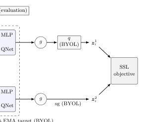
<figcaption class="paper-figure-caption"><b>Fig 1.</b> Fig. 1. Overall architecture. Each preprocessed fingerprint xi (Gabor + Canny) is augmented into two views x1 i , x2 i and passed through a shared encoder: a CNN (ResNet- 18) backbone followed by a representation network that is either a classical MLP or the quantum module (QuFeX / QNet). A projection head g maps representations to z1 i , z2 i for the self supervised objective. For SimCLR and MoCo v2, the objective is contrastive with weight sharing; In BYOL, the target branch is an EMA target, the online branch adds a predictor q, and a stop gradient (sg) is applied to the EMA target. The KNN monitor evaluates the representation y1 i before the projection head.</figcaption>
</figure>
<figure class="paper-figure-card">
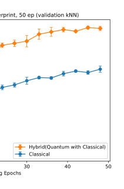
<figcaption class="paper-figure-caption"><b>Fig 2.</b> Fig. 2. MoCo v2 on fingerprints (SOCOFing, 50 epochs), classical vs. hybrid (QuFeX) at width 8. The hybrid separates from the classical baseline within the first ten epochs and stays above it for the whole run on validation Top-5, so the advantage is not an artefact of the single best epoch. Markers are single-run values (seed 0); error bars show ±1 s.d. of the metric over a forward window of a few consecutive epochs, i.e. within-run epoch-to-epoch volatility, not confidence intervals, across-seed variance, or the significance of the hybrid–classical gap.</figcaption>
</figure>
<figure class="paper-figure-card">
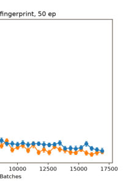
<figcaption class="paper-figure-caption"><b>Fig 3.</b> Fig. 3. MoCo v2 training loss (InfoNCE) on fingerprints, classical vs. hybrid (QuFeX). The hybrid loss is consistently lower, so loss and recognition (Fig. 2) agree. Markers are single-run values (seed 0); error bars show ±1 s.d. of the loss over a forward window of ≈20 consecutive batches, i.e. within-run batch-to-batch volatility inflated by the training-curve slope, not confidence intervals or across-seed variance.</figcaption>
</figure>
<figure class="paper-figure-card">
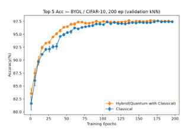
<figcaption class="paper-figure-caption"><b>Fig 4.</b> Fig. 4. BYOL validation Top-5 kNN, classical vs. hybrid (QuFeX). (a) On fingerprints, the hybrid rises smoothly while the classical model dips to about 13% near epoch 15 before recovering. (b) On the CIFAR-10 control both saturate near 97.5%, but the hybrid reaches the plateau earlier. Markers are single-run values (seed 0); error bars show ±1 s.d. over a forward window of a few consecutive epochs (within-run volatility), not confidence intervals, across-seed variance, or gap significance.</figcaption>
</figure>
<figure class="paper-figure-card">
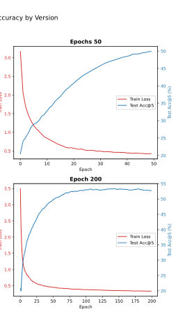
<figcaption class="paper-figure-caption"><b>Fig 5.</b> Fig. 5. Hybrid Quantum-Classical accuracy versus loss for SimCLR models with one QuFex layer injected at different epoch sizes.</figcaption>
</figure>
</div>

<p><strong>Summary.</strong> This work explores using hybrid quantum-classical neural networks for fingerprint recognition via Self-Supervised Learning. By inserting a quantum feature-extraction module (QuFeX) into established SSL frameworks, the authors show consistent, albeit modest, performance gains over purely classical models. The study aims to delineate whether these gains stem from the quantum circuit itself or are artifacts of the specific SSL objective used.</p>
<p><strong>Why it may be interesting.</strong> While the application is in biometrics, the methodology involves embedding quantum circuits into deep learning representations, which touches upon the intersection of quantum information processing and complex pattern recognition, relevant to ML-physics.</p>
<details>
<summary>Detailed structure</summary>
<p><strong>Main problem.</strong> The paper investigates whether integrating a quantum feature-extraction module into Self-Supervised Learning (SSL) encoders can improve biometric recognition performance compared to purely classical counterparts.</p>
<p><strong>Main result.</strong> The hybrid quantum-classical models consistently achieved higher Top-5 recognition accuracy than their classical baselines across multiple SSL objectives, though the benefit is modest and dependent on the specific SSL objective used.</p>
<p><strong>Method.</strong> The authors compared three SSL frameworks (SimCLR, MoCo v2, BYOL) by inserting a quantum module (QuFeX) into the representation layer, comparing the results against width-matched classical counterparts.</p>
<p><strong>Model / system.</strong> The system uses a hybrid quantum-classical neural network architecture for fingerprint recognition. The quantum component is the QuFeX module, which processes an 8-dimensional feature vector derived from a ResNet-18 backbone.</p>
<p><strong>Key observables.</strong> Top-5 k-nearest-neighbor (KNN) identification accuracy on the SOCOFing fingerprint dataset, and comparison of training loss (InfoNCE).</p>
<p><strong>Important parameters / regimes.</strong> Representation width ($w=8$ features/qubits), number of qubits (8), and the choice of SSL objective (contrastive vs. non-contrastive).</p>
<p><strong>Assumptions / limitations.</strong> The comparison is performed under a width-matched condition, and the observed gains are analyzed for dependence on the SSL objective rather than solely the quantum circuit structure.</p>
<p><strong>Figures summary.</strong> Figures compare the training loss and Top-5 accuracy of hybrid vs. classical models across different SSL objectives (SimCLR, MoCo v2, BYOL) at various epoch lengths.</p>
<p><strong>Paper structure.</strong> The paper establishes the problem (SSL for biometrics), details the hybrid architecture (QuFeX insertion), presents comparative results across multiple SSL objectives and datasets, and concludes by analyzing the source of the observed performance gains.</p>
</details>
<details>
<summary>Abstract</summary>
<p>Fingerprint recognition is a widely deployed biometric, but supervised training requires large labeled enrollment sets. Self-supervised learning (SSL) removes this requirement, and hybrid quantum-classical models have been proposed to enrich the learned representations. Prior quantum SSL studies consider a single contrastive objective, so it is unclear whether reported benefits depend on the objective or can be attributed to the quantum circuit. We insert the QuFeX quantum feature-extraction module into three SSL frameworks, the contrastive SimCLR and MoCo v2 and the non-contrastive BYOL, and compare each hybrid with its classical counterpart at matched representation width (8 features, equal to 8 qubits) on the SOCOFing fingerprint dataset, with a CIFAR-10 control, using k-nearest-neighbor identification on encoder features. In single-run experiments the hybrid scores clearly higher for both contrastive objectives, whereas for BYOL a multi-seed analysis shows no reliable difference, suggesting that any benefit depends on the SSL objective. A hardware-efficient circuit (QNet) does not show the same gain. We examine whether the gains can be attributed to the quantum circuit, considering circuit architecture, trainable parameter count, nonlinearity, and the classical simulability of 8-qubit circuits.</p>
</details>
<p><sub><a href="#top">↑ back to top</a></sub></p>

<p><a id="paper-2609.40150"></a></p>
<h3 id="adapol-adaptive-pole-fitting-for-quantum-many-body-physics"><a href="http://arxiv.org/abs/2609.40150v1">adapol: Adaptive pole-fitting for quantum many-body physics</a></h3>
<p><strong>Authors:</strong> Zhen Huang, Chia-Nan Yeh, Lin Lin, Nils Wentzell, Jason Kaye, Hugo U. R. Strand<br>
<strong>Type:</strong> theory · <strong>Category:</strong> strongly correlated electrons · <strong>PDF:</strong> <a href="https://arxiv.org/pdf/2609.40150v1">https://arxiv.org/pdf/2609.40150v1</a><br>
<strong>Analysis basis:</strong> full PDF text, analyzed in chunks
<strong>Topic relevance:</strong> <code>Keldysh / 2PI / non-Gaussian methods</code> <strong>1/5</strong></p>
<div class="figure-strip-hint">↔ Scroll figures horizontally</div>
<div class="paper-figures-scroll">
<figure class="paper-figure-card">
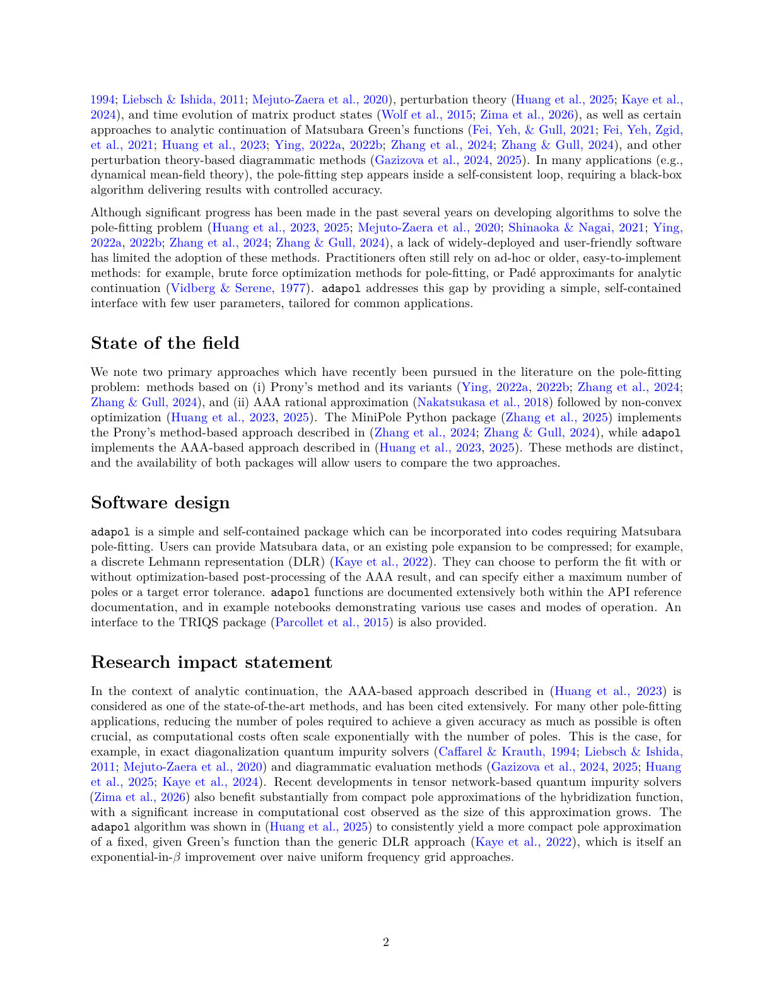
<figcaption class="paper-figure-caption"><b>Fig 1.</b> Low-resolution page preview, page 2</figcaption>
</figure>
<figure class="paper-figure-card">
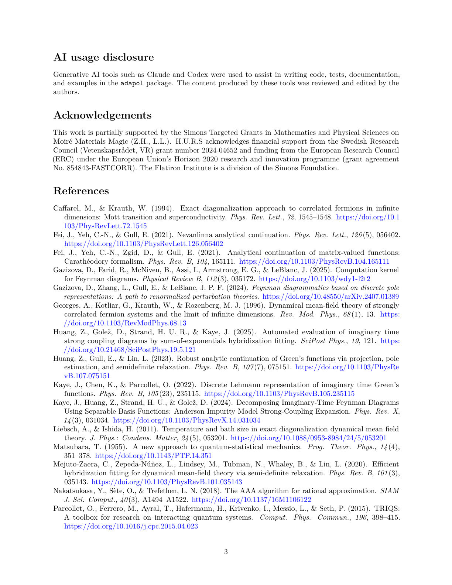
<figcaption class="paper-figure-caption"><b>Fig 2.</b> Low-resolution page preview, page 3</figcaption>
</figure>
<figure class="paper-figure-card">
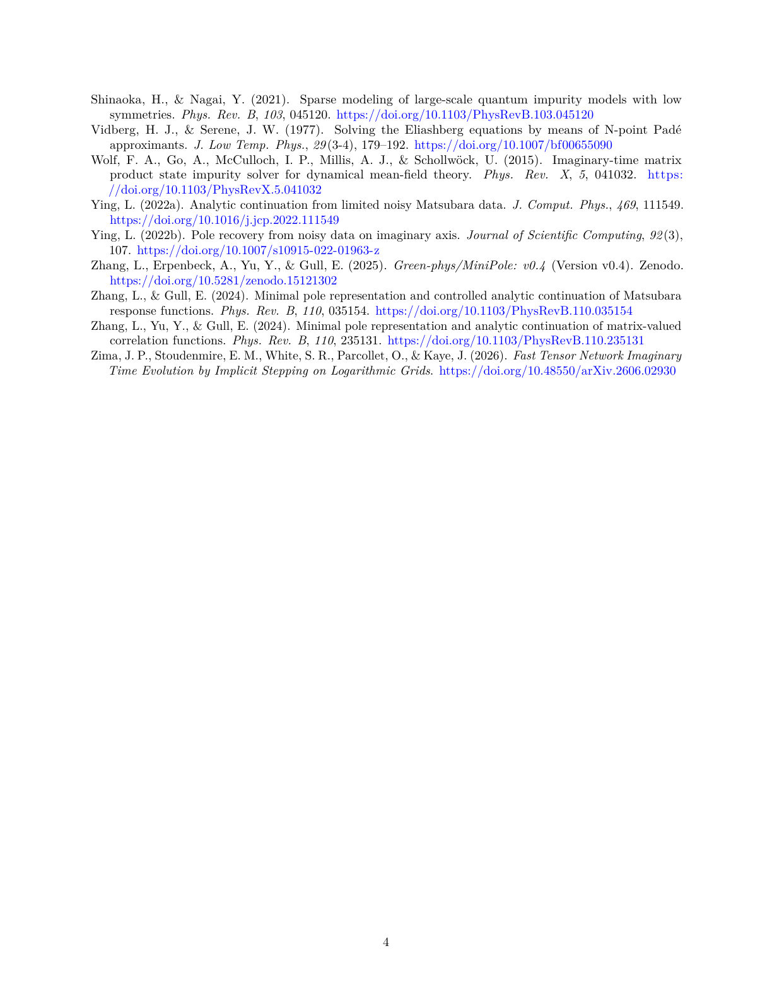
<figcaption class="paper-figure-caption"><b>Fig 3.</b> Low-resolution page preview, page 4</figcaption>
</figure>
</div>

<p><strong>Summary.</strong> This paper presents 'adapol,' a new Python package designed to fit quantum many-body functions defined on the imaginary Matsubara axis into a minimal sum of simple poles. By employing a modified AAA algorithm, it offers a robust and computationally efficient way to perform pole-fitting for quantities like Green's functions. This tool is vital for advanced theoretical studies in strongly correlated electron systems.</p>
<p><strong>Why it may be interesting.</strong> This work provides a crucial, user-friendly computational tool for extracting real-axis spectral information from imaginary-time data, which is fundamental to studying strongly correlated electron systems via techniques like DMFT.</p>
<details>
<summary>Detailed structure</summary>
<p><strong>Main problem.</strong> The core problem is accurately decomposing complex, finite-temperature quantum many-body functions (like Green's functions) defined on the imaginary Matsubara axis into a compact sum of simple poles.</p>
<p><strong>Main result.</strong> The authors introduce 'adapol,' a robust Python package that provides an accurate, black-box, and noise-resistant method for this pole-fitting procedure.</p>
<p><strong>Method.</strong> adapol uses a modified AAA rational approximation algorithm to estimate pole locations, followed by non-convex optimization to refine these estimates, yielding a minimal pole representation.</p>
<p><strong>Model / system.</strong> The methods are applied to quantum many-body physics, specifically analyzing Matsubara Green's functions, self-energies, and hybridization functions relevant to quantum impurity solvers and DMFT calculations.</p>
<p><strong>Key observables.</strong> Matsubara Green's functions, self-energies, and hybridization functions.</p>
<p><strong>Important parameters / regimes.</strong> Inverse temperature ($eta$) and Matsubara frequencies ($
u_n$).</p>
<p><strong>Assumptions / limitations.</strong> The pole-fitting problem is highly non-convex, necessitating advanced techniques beyond simple component-wise fitting.</p>
<p><strong>Paper structure.</strong> The paper introduces the mathematical necessity of pole decomposition for computational efficiency, details the implementation of adapol using AAA approximation, and demonstrates its robustness across various physical contexts.</p>
</details>
<details>
<summary>Abstract</summary>
<p>We describe adapol, a Python package for fitting Matsubara Green's functions, self-energies, and hybridization functions by a compact sum of simple poles with real pole locations and matrix-valued residues. This pole-fitting step arises in many contexts, including hybridization fitting for quantum impurity solvers based on exact diagonalization, perturbation theory, and tensor networks, the compression of existing pole expansions such as the discrete Lehmann representation, diagrammatic methods based on discrete pole representations, and the analytic continuation of Matsubara Green's functions. adapol uses a modified version of the AAA rational approximation algorithm to estimate pole locations, and non-convex optimization to refine them. This procedure yields accurate and compact fits in a black-box and noise-robust manner. adapol provides a simple, self-contained interface with extensive documentation and examples, as well as an interface to the TRIQS package.</p>
</details>
<p><sub><a href="#top">↑ back to top</a></sub></p>

<p><a id="paper-2609.40250"></a></p>
<h3 id="an-almost-efficient-classical-algorithm-for-sampling-from-typical-gibbs-states"><a href="http://arxiv.org/abs/2609.40250v1">An (almost) efficient classical algorithm for sampling from typical Gibbs states</a></h3>
<p><strong>Authors:</strong> Saleh Naghdi, Eric R. Anschuetz<br>
<strong>Type:</strong> theory · <strong>Category:</strong> disordered systems and neural networks · <strong>PDF:</strong> <a href="https://arxiv.org/pdf/2609.40250v1">https://arxiv.org/pdf/2609.40250v1</a><br>
<strong>Analysis basis:</strong> full PDF text, analyzed in chunks
<strong>Topic relevance:</strong> <code>analog quantum simulation</code> <strong>1/5</strong></p>
<div class="figure-strip-hint">↔ Scroll figures horizontally</div>
<div class="paper-figures-scroll">
<figure class="paper-figure-card">
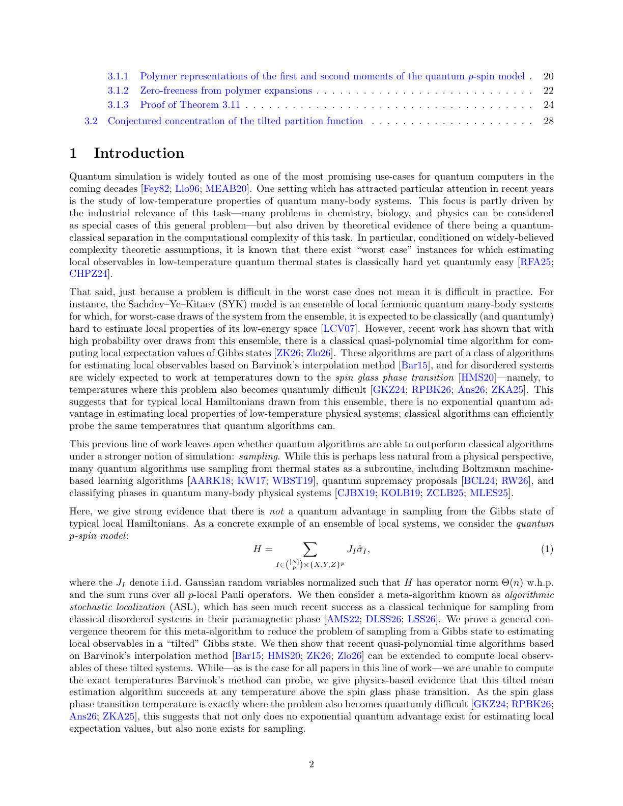
<figcaption class="paper-figure-caption"><b>Fig 1.</b> Low-resolution page preview, page 2</figcaption>
</figure>
<figure class="paper-figure-card">
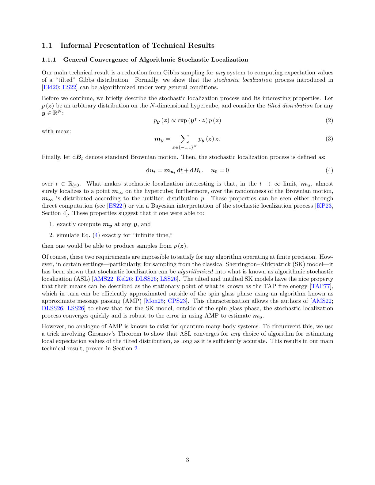
<figcaption class="paper-figure-caption"><b>Fig 2.</b> Low-resolution page preview, page 3</figcaption>
</figure>
<figure class="paper-figure-card">
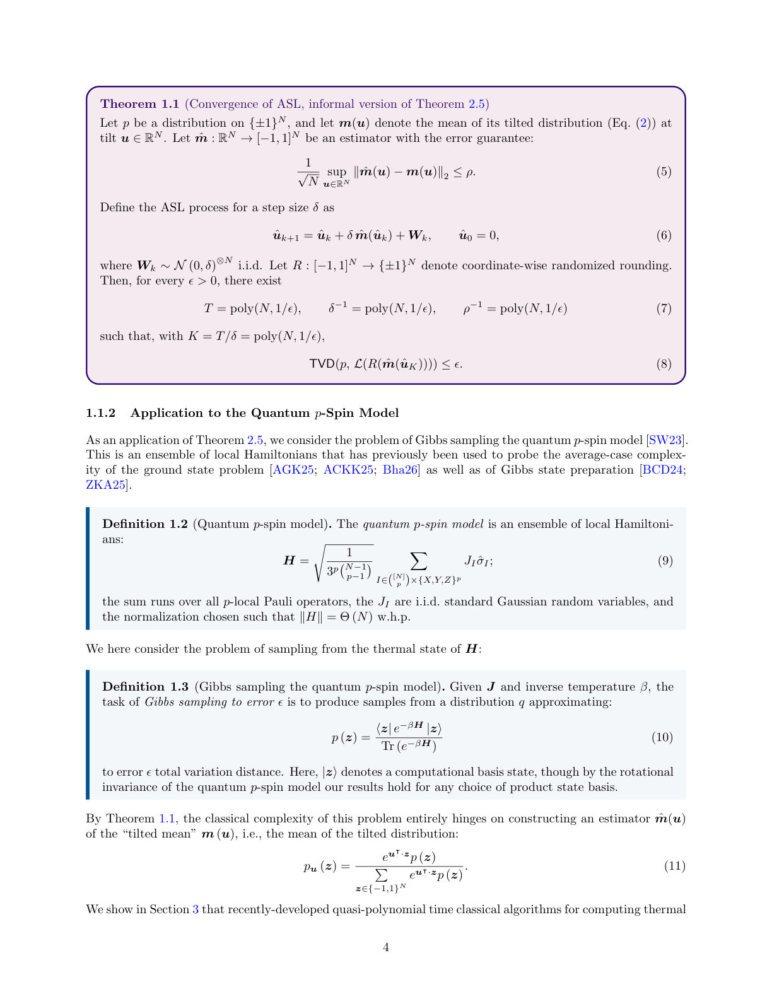
<figcaption class="paper-figure-caption"><b>Fig 3.</b> Low-resolution page preview, page 4</figcaption>
</figure>
<figure class="paper-figure-card">
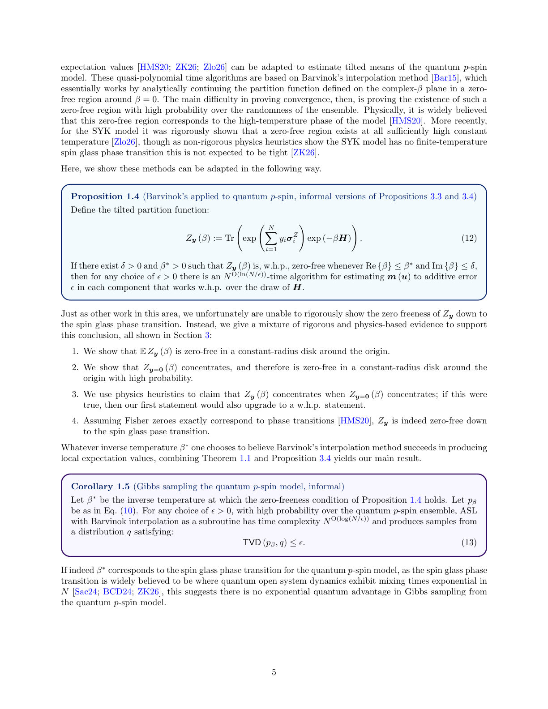
<figcaption class="paper-figure-caption"><b>Fig 4.</b> Low-resolution page preview, page 5</figcaption>
</figure>
<figure class="paper-figure-card">

<figcaption class="paper-figure-caption"><b>Fig 5.</b> Low-resolution page preview, page 6</figcaption>
</figure>
</div>

<p><strong>Summary.</strong> This paper develops a classical algorithm to sample from the Gibbs state of the quantum p-spin model, showing that the process can be reduced to estimating 'tilted means' using advanced mathematical techniques. The authors argue that this classical efficiency suggests that quantum computers may not offer an exponential advantage for sampling these typical disordered systems, particularly near phase transitions.</p>
<p><strong>Why it may be interesting.</strong> It directly addresses the boundary between quantum simulation and classical computation for equilibrium statistical mechanics, which is a major theme in modern condensed matter theory.</p>
<details>
<summary>Detailed structure</summary>
<p><strong>Main problem.</strong> The paper investigates whether there is an exponential quantum advantage over classical algorithms for sampling from the Gibbs state of typical local Hamiltonians.</p>
<p><strong>Main result.</strong> The authors provide strong evidence against an exponential quantum advantage in Gibbs sampling for the quantum p-spin model, suggesting classical algorithms can achieve sampling efficiency down to the spin glass transition temperature.</p>
<p><strong>Method.</strong> The classical algorithm is constructed using Algorithmic Stochastic Localization (ASL), which reduces sampling to estimating the mean of a related 'tilted distribution' using techniques derived from Barvinok's interpolation method.</p>
<p><strong>Model / system.</strong> The primary model is the quantum p-spin model, an ensemble of local Hamiltonians defined by random Gaussian couplings. The analysis focuses on the thermal Gibbs state associated with this Hamiltonian.</p>
<p><strong>Key observables.</strong> Total Variation Distance (TVD) between the true Gibbs distribution and the sampled distribution; the 'tilted mean' of the distribution.</p>
<p><strong>Important parameters / regimes.</strong> Temperature (especially near the spin glass transition), system size N, and the error tolerance $\epsilon$.</p>
<p><strong>Assumptions / limitations.</strong> The final argument regarding the spin glass transition temperature is noted as a non-rigorous physics argument; the rigorous convergence proof relies on the zero-freeness of the tilted partition function in the complex plane.</p>
<p><strong>Paper structure.</strong> The paper introduces the problem of quantum advantage in Gibbs sampling, develops the ASL meta-algorithm, proves a general convergence theorem for ASL based on estimating tilted means, and applies this to the quantum p-spin model to draw conclusions about computational complexity.</p>
</details>
<details>
<summary>Abstract</summary>
<p>Gibbs state preparation has emerged as a potential avenue for quantum advantage in the study of physical systems. Although there is known advantage for computing local properties of worst-case Gibbs states, recent results suggest a different picture for average-case local systems: at temperatures where their Gibbs states can be efficiently prepared quantumly, quasi-polynomial time classical algorithms can also compute local expectation values. Yet this leaves open the possibility of an advantage under a stronger notion of simulation: sampling. Gibbs sampling underlies Boltzmann machine-based quantum learning algorithms and quantum supremacy proposals, but its classical average-case complexity for physically relevant models remains unresolved. Here, we give strong evidence against an exponential quantum advantage in Gibbs sampling for an ensemble of local systems known as the quantum $p$-spin model. We describe a classical algorithm for sampling from the Gibbs state to any polynomially small error in total variation distance. Our algorithm is based on a meta-algorithm known as algorithmic stochastic localization (ASL). Our main technical result is a generalized convergence theorem for ASL which reduces approximate sampling from any distribution on the hypercube to estimating the mean of a related "tilted distribution" to sufficiently low additive error. We then extend known quasi-polynomial time algorithms for computing local expectation values of a related disordered model to compute these "tilted means" for the quantum $p$-spin model. Finally, we give a non-rigorous physics argument that this mean-estimation algorithm works down to the spin glass transition temperature. As efficient quantum algorithms also fail at this transition, this suggests they cannot Gibbs sample the quantum $p$-spin model at temperatures below that for which classical algorithms are also (almost) efficient.</p>
</details>
<p><sub><a href="#top">↑ back to top</a></sub></p>

<p><a id="paper-2609.39286"></a></p>
<h3 id="bounds-on-adiabatic-path-geometry-from-the-width-class-of-the-gap-profile"><a href="http://arxiv.org/abs/2609.39286v1">Bounds on adiabatic path geometry from the width class of the gap profile</a></h3>
<p><strong>Authors:</strong> Mancheon Han, Sangkook Choi<br>
<strong>Type:</strong> theory · <strong>Category:</strong> other · <strong>PDF:</strong> <a href="https://arxiv.org/pdf/2609.39286v1">https://arxiv.org/pdf/2609.39286v1</a><br>
<strong>Analysis basis:</strong> full PDF text, analyzed in chunks
<strong>Topic relevance:</strong> <code>analog quantum simulation</code> <strong>1/5</strong></p>
<div class="figure-strip-hint">↔ Scroll figures horizontally</div>
<div class="paper-figures-scroll">
<figure class="paper-figure-card">

<figcaption class="paper-figure-caption"><b>Fig 1.</b> FIG. 1. (a) A schematic of the ground subspace. The g lowest levels are in the darker shaded region, inside which they may cross or become degenerate, and ∆(s) separates them from the rest of the spectrum. (b)–(d) The two-level crossing H(s) = ω(s−s∗)σz + ∆∗</figcaption>
</figure>
<figure class="paper-figure-card">

<figcaption class="paper-figure-caption"><b>Fig 2.</b> FIG. 2. The adiabatic Grover search (a,b) and the XXZ chain (c,d). (a) The gap for N = 24, 210, 220. (b) L versus ∆∗= 1/ √</figcaption>
</figure>
<figure class="paper-figure-card">

<figcaption class="paper-figure-caption"><b>Fig 3.</b> FIG. 3. Adiabatic path length L and total curvature K versus ∆∗for the N2 bond-length family (a,b) and the [2Fe-2S] deter- minant family (c,d). Open circles are the computed values. Solid lines are the bounds of Theorem 7 and Corollary 11, dashed lines the conventional bounds Eq. (13) and Eq. (30), with the same coefficients. The shaded area fills the region between the two bounds.</figcaption>
</figure>
</div>

<p><strong>Summary.</strong> This theoretical paper improves the estimation of geometric quantities—path length and curvature—for quantum systems undergoing adiabatic evolution. By introducing the 'width class' $p$ based on the gap profile, the authors derive tighter scaling laws for these quantities compared to traditional bounds. This has significant implications for determining the minimum achievable evolution time in quantum computation protocols.</p>
<p><strong>Why it may be interesting.</strong> This work provides powerful, quantitative tools to estimate the minimum time required for adiabatic quantum computation, moving beyond simple gap estimates by incorporating the functional geometry of the gap closing.</p>
<details>
<summary>Detailed structure</summary>
<p><strong>Main problem.</strong> The paper aims to derive improved, tighter bounds on the geometric properties (length $L$ and total curvature $K$) of the adiabatic path taken by the ground state during slow Hamiltonian evolution.</p>
<p><strong>Main result.</strong> The bounds are improved by introducing the 'width class' $p$ of the gap profile, leading to scaling laws $L = \mathcal{O}(\Delta^{(p-1)/(2p)})$ and $K = \mathcal{O}(\Delta^{(p-1)/p})$ for $p>1$.</p>
<p><strong>Method.</strong> The analysis uses spectral theory, relating the path geometry to the width class $\mu_{<\gamma}$ of the energy gap $\Delta(s)$, which characterizes how quickly the gap closes as the parameter $s$ approaches a critical point.</p>
<p><strong>Model / system.</strong> The study concerns the adiabatic evolution governed by a time-dependent Hamiltonian $H(s)$ in a finite-dimensional Hilbert space. The analysis is general but demonstrates applicability to systems like the XXZ spin chain and molecular electronic Hamiltonians.</p>
<p><strong>Key observables.</strong> Adiabatic path length ($L$), total curvature ($K$), minimum energy gap ($\Delta^*$), and the width class $p$ derived from the gap profile $\mu_{<\gamma}$.</p>
<p><strong>Important parameters / regimes.</strong> The width class exponent $p \ge 1$, and the minimum gap $\Delta_*$.</p>
<p><strong>Assumptions / limitations.</strong> The bounds on $L$ hold for any twice continuously differentiable $H(s)$, while bounds on $K$ require $H(s)$ to be affine in $s$.</p>
<p><strong>Figures summary.</strong> Not specified in the notes.</p>
<p><strong>Paper structure.</strong> The paper first establishes conventional bounds, then introduces the width class $p$ to derive improved scaling laws for $L$ and $K$ based on $p$. It proves the tightness of these scalings for integer $p \ge 1$ and applies the results to specific physical models.</p>
</details>
<details>
<summary>Abstract</summary>
<p>In an adiabatic evolution, the wave function follows the path of ground states $|Φ_0(s)\rangle$ of a Hamiltonian $H(s)$ as $s$ is tuned from $0$ to $1$. The geometry of this adiabatic path is described by quantities such as its length $L=\int_0^1 \|\partial_s |Φ_0(s)\rangle\|\,ds$ and its total curvature $K$. This geometry affects the evolution time $T$. For instance, $T$ is at least of order $L/Δ_*$, where $Δ_*$ is the minimum energy gap over $s\in[0,1]$. The traditional approach gives $L=\mathcal{O}(Δ_*^{-1/2})$ and $K=\mathcal{O}(Δ_*^{-1})$, which are loose in many cases. We improve these bounds by using $μ_<(γ)$, the width of the region in $s$ on which the gap is below $γ$. The gap profile is in width class $p$ when $μ_<(γ)$ falls at least as fast as $γ^{1/p}$. A typical avoided crossing is in width class $p=1$, which gives $L=\mathcal{O}(\sqrt{\log Δ_*^{-1}})$ and $K=\mathcal{O}(\log Δ_*^{-1})$. A profile in width class $p>1$ gives power laws with exponents $(p-1)/(2p)$ for $L$ and $(p-1)/p$ for $K$. The width class also bounds the evolution time. At $p=1$ we have $T=\mathcal{O}(Δ_*^{-2})$ with a schedule that advances $s$ at a constant rate, and $T=\mathcal{O}(Δ_*^{-1})$ up to a polylogarithmic correction with a schedule that traverses the path at a constant geometric speed. The bounds on $L$ hold for any twice continuously differentiable $H(s)$, and the bounds on $K$ for affine $H(s)$. We also prove the tightness of scaling of $L$ in $Δ_*$ for every integer $p\ge1$, and the scaling of $K$ at $p=1$. We demonstrate the bounds on the adiabatic Grover search, the XXZ spin chain, and molecular electronic Hamiltonians.</p>
</details>
<p><sub><a href="#top">↑ back to top</a></sub></p>

<p><a id="paper-2609.40179"></a></p>
<h3 id="breaking-the-multiplicative-overhead-in-quantum-entropy-estimation"><a href="http://arxiv.org/abs/2609.40179v1">Breaking the Multiplicative Overhead in Quantum Entropy Estimation</a></h3>
<p><strong>Authors:</strong> Junxiang Huang, Chenyang Li, Lu-Fan Zhang, Yusen Wu, Yukun Zhang<br>
<strong>Type:</strong> theory · <strong>Category:</strong> quantum information and computing · <strong>PDF:</strong> <a href="https://arxiv.org/pdf/2609.40179v1">https://arxiv.org/pdf/2609.40179v1</a><br>
<strong>Analysis basis:</strong> full PDF text, analyzed in chunks
<strong>Topic relevance:</strong> <code>quantum measurements</code> <strong>1/5</strong></p>
<div class="figure-strip-hint">↔ Scroll figures horizontally</div>
<div class="paper-figures-scroll">
<figure class="paper-figure-card">

<figcaption class="paper-figure-caption"><b>Fig 1.</b> Figure 1: Multi-level allocation of processing and statistical work. The middle panel shows processing costs and certified mass envelopes. On fine scales with 8Rδℓ≤1, the rank-based envelope decreases linearly with δℓ, while processing has inverse-scale cost up to logarithmic factors. The refined variable-time query bound assumes the dyadic rank-type survival bound proved in Section 3.4.</figcaption>
</figure>
<figure class="paper-figure-card">

<figcaption class="paper-figure-caption"><b>Fig 2.</b> Figure 2: Variable-time module circuit for one selected level and Hadamard sign. Fixed time omits the known-success branch and calibration; reference-branch failure is excluded at the first stage-end projection. The wires show coherent controlled operations, not intermediate branch measurements. The prefix executes a classifier only on a still-running real path; every inverse reverses its records, Boolean updates, and clean-input preparation. Here h+ = 0 and h−= 1. The environment E is untouched. The final success flag is the projection used by the statistical estimator.</figcaption>
</figure>
</div>

<p><strong>Summary.</strong> This paper introduces novel multi-level algorithms to overcome the multiplicative overhead plaguing quantum entropy estimation. By replacing global cost products with local, summed costs, the authors derive significantly improved, near-optimal query complexity bounds for key measures like Tsallis and von Neumann entropies. This framework offers a systematic approach to optimizing resource estimation for general quantum functionals.</p>
<p><strong>Why it may be interesting.</strong> The development of systematic, optimal query complexity bounds for general density-matrix functionals provides a powerful theoretical tool applicable to characterizing quantum resources and information processing limits.</p>
<details>
<summary>Detailed structure</summary>
<p><strong>Main problem.</strong> The paper addresses the multiplicative overhead in estimating quantum entropies, where current methods combine worst-case costs from spectral transformation and statistical readout.</p>
<p><strong>Main result.</strong> The authors develop multi-level algorithms that replace the global product cost with a sum of local costs, achieving near-optimal query complexities for Tsallis and von Neumann entropies.</p>
<p><strong>Method.</strong> They employ multi-level algorithms, local normalization, and variable-time estimation, formalized by a functional-estimation theorem that sums local costs weighted by spectral masses.</p>
<p><strong>Model / system.</strong> The work analyzes quantum states ($
ho$) and their associated entropies (von Neumann, Tsallis, Rényi), using controlled purified access to establish complexity bounds.</p>
<p><strong>Key observables.</strong> von Neumann entropy, Tsallis entropy, Rényi entropy, fixed logarithmic moments, and entropy variance.</p>
<p><strong>Important parameters / regimes.</strong> Additive error $\varepsilon$, rank upper bound $R$, and fixed order $\alpha$.</p>
<p><strong>Assumptions / limitations.</strong> The analysis assumes purified access to the quantum state and relies on a coherent spectral decomposition that avoids discarding branch mass.</p>
<p><strong>Figures summary.</strong> Not specified, but the notes mention comparing previous and new upper bounds for various entropies across different conditions.</p>
<p><strong>Paper structure.</strong> The paper introduces the problem of multiplicative overhead, proposes multi-level algorithms and the functional-estimation theorem, and derives specific, improved query complexity bounds for Tsallis and von Neumann entropies.</p>
</details>
<details>
<summary>Abstract</summary>
<p>The von Neumann, Tsallis, and Rényi entropies are fundamental measures of quantum information. A common estimation strategy multiplies the worst-case costs of spectral transformation and statistical readout, leaving gaps to query lower bounds. We reduce this overhead with multi-level algorithms that use local normalization and precision allocation, while variable-time estimation accounts for the probability of reaching expensive spectral tests. With controlled purified access and its inverse, we obtain bounds for additive error $\varepsilon$, rank upper bound $R$, and fixed order $α$. Tsallis entropy estimation has near-optimal rank-independent query complexity $\widetilde O(\varepsilon^{-1/(α-1)})$ for $1<α<2$, when the allowed dimension and rank accommodate the lower-bound instances, and $\widetilde O(1/\varepsilon)$ for $α\ge2$, where $\widetilde O$ suppresses logarithmic factors. The first saves a factor $1/\varepsilon$; the second extends known integer-order scaling to noninteger orders. We also improve the von Neumann entropy bound from $\widetilde O(R/\varepsilon^2)$ to $\widetilde O(R/\varepsilon)$ and obtain $\widetilde O(R/\varepsilon)$ for noninteger Rényi orders $1<α<3$, with further bounds at other orders. Our functional-estimation theorem replaces the global product by a sum of local costs weighted by function magnitudes and spectral masses. We further estimate fixed logarithmic moments and entropy variance using $\widetilde O(R/\varepsilon)$ queries, providing efficient access to fluctuation parameters that enter finite-blocklength quantum compression and pure-state entanglement conversion. More broadly, our framework extends beyond entropy to a broad class of density-matrix functionals, offering a systematic approach toward optimal query complexity in quantum spectral estimation.</p>
</details>
<p><sub><a href="#top">↑ back to top</a></sub></p>

<p><a id="paper-2609.40223"></a></p>
<h3 id="causal-inequalities-witness-non-stabilizerness"><a href="http://arxiv.org/abs/2609.40223v1">Causal inequalities witness non-stabilizerness</a></h3>
<p><strong>Authors:</strong> Leonardo Vaglini, Nasra Daher Ahmed, Ravi Kunjwal<br>
<strong>Type:</strong> theory · <strong>Category:</strong> quantum information and computing · <strong>PDF:</strong> <a href="https://arxiv.org/pdf/2609.40223v1">https://arxiv.org/pdf/2609.40223v1</a><br>
<strong>Analysis basis:</strong> full PDF text, analyzed in chunks
<strong>Topic relevance:</strong> <code>quantum measurements</code> <strong>1/5</strong></p>
<div class="figure-strip-hint">↔ Scroll figures horizontally</div>
<div class="paper-figures-scroll">
<figure class="paper-figure-card">

<figcaption class="paper-figure-caption"><b>Fig 1.</b> Low-resolution page preview, page 2</figcaption>
</figure>
<figure class="paper-figure-card">

<figcaption class="paper-figure-caption"><b>Fig 2.</b> Low-resolution page preview, page 3</figcaption>
</figure>
<figure class="paper-figure-card">

<figcaption class="paper-figure-caption"><b>Fig 3.</b> Low-resolution page preview, page 4</figcaption>
</figure>
<figure class="paper-figure-card">

<figcaption class="paper-figure-caption"><b>Fig 4.</b> Low-resolution page preview, page 5</figcaption>
</figure>
<figure class="paper-figure-card">

<figcaption class="paper-figure-caption"><b>Fig 5.</b> Low-resolution page preview, page 6</figcaption>
</figure>
</div>

<p><strong>Summary.</strong> This work characterizes nonstabilizerness, a resource theory concept distinguishing between different types of quantum operations. The authors prove that for product bases, the inability to perfectly distinguish states using only stabilizer operations is mathematically equivalent to the underlying classical process function violating a causal inequality. This establishes causality violation as a fundamental witness of quantum nonclassicality.</p>
<p><strong>Why it may be interesting.</strong> The connection drawn between quantum resource theory (nonstabilizerness) and fundamental concepts from causality (causal inequalities) provides a deep, physical interpretation of computational nonclassicality.</p>
<details>
<summary>Detailed structure</summary>
<p><strong>Main problem.</strong> The paper investigates the operational difference between stabilizer operations (SO) and completely stabilizer preserving operations (CSPO) in the resource theory of magic states, focusing on the phenomenon of 'nonstabilizerness without magic' (NSWM).</p>
<p><strong>Main result.</strong> It establishes that a stabilizer product basis exhibits NSWM if and only if the associated process function violates a causal inequality, providing a new operational meaning to causal violations as witnesses of computational nonclassicality.</p>
<p><strong>Method.</strong> The authors derive necessary and sufficient criteria for perfect distinguishability of stabilizer bases by linking the structure of the associated Pauli group subgroup (S_B) to the causality structure of the process function governing the system.</p>
<p><strong>Model / system.</strong> The study uses stabilizer states and bases (including product bases) in quantum information theory, modeling resource constraints via operations (SO vs. CSPO) and classical causal structures via process functions.</p>
<p><strong>Key observables.</strong> Nonstabilizerness (NSWM), perfect distinguishability of bases, and violations of causal inequalities.</p>
<p><strong>Important parameters / regimes.</strong> The dimension $d$ of the qudits (often prime), and the number of parties $n$.</p>
<p><strong>Assumptions / limitations.</strong> The analysis relies on the framework of stabilizer codes and assumes the connection between quantum distinguishability and classical causal structure for product bases.</p>
<p><strong>Paper structure.</strong> The paper progresses by first defining the operational gap (SO vs. CSPO), deriving general criteria for NSWM using the subgroup S_B, and then specializing to product bases to establish the equivalence between NSWM and causal inequality violation.</p>
</details>
<details>
<summary>Abstract</summary>
<p>Stabilizer operations describe a fragment of quantum theory that is known to be efficiently classically simulable, thanks to the Gottesman-Knill theorem. For this reason, nonstabilizer resources such as magic states are necessary for universal quantum computation. Interestingly, the operational and axiomatic approaches to the resource theory of magic differ: the set of free operations in the former, namely, stabilizer operations (SO), is strictly smaller than that in the latter, namely, completely stabilizer preserving operations (CSPO). A simple example showing the separation is given by a three-qubit stabilizer product basis whose states cannot be perfectly discriminated using SO, but which do admit perfect discrimination using CSPO. Such an ensemble of states is said to exhibit nonstabilizerness without magic (NSWM). Here we obtain a principled understanding of this phenomenon, proving necessary and sufficient conditions for its existence. We first derive a simple criterion to decide whether, given a stabilizer basis, its states can be perfectly discriminated using stabilizer operations alone. We then consider the case where the stabilizer basis contains only product states and use its link with process functions---classical models of paradox-free causal loops---to prove the following: the states in a stabilizer product basis require nonstabilizerness for perfect discrimination if and only if the corresponding process function violates a causal inequality. This provides a new operational meaning to causal inequality violations as witnesses of nonstabilizerness, a form of computational nonclassicality.</p>
</details>
<p><sub><a href="#top">↑ back to top</a></sub></p>

<p><a id="paper-2609.38945"></a></p>
<h3 id="certified-randomness-with-optimal-rate"><a href="http://arxiv.org/abs/2609.38945v1">Certified Randomness with Optimal Rate</a></h3>
<p><strong>Authors:</strong> Siddhartha Jain, Saachi Mutreja, Bhaskar Roberts<br>
<strong>Type:</strong> theory · <strong>Category:</strong> quantum information and computing · <strong>PDF:</strong> <a href="https://arxiv.org/pdf/2609.38945v1">https://arxiv.org/pdf/2609.38945v1</a><br>
<strong>Analysis basis:</strong> full PDF text, analyzed in chunks
<strong>Topic relevance:</strong> <code>quantum measurements</code> <strong>1/5</strong></p>
<div class="figure-strip-hint">↔ Scroll figures horizontally</div>
<div class="paper-figures-scroll">
<figure class="paper-figure-card">

<figcaption class="paper-figure-caption"><b>Fig 1.</b> Low-resolution page preview, page 2</figcaption>
</figure>
<figure class="paper-figure-card">

<figcaption class="paper-figure-caption"><b>Fig 2.</b> Low-resolution page preview, page 3</figcaption>
</figure>
<figure class="paper-figure-card">

<figcaption class="paper-figure-caption"><b>Fig 3.</b> Low-resolution page preview, page 4</figcaption>
</figure>
<figure class="paper-figure-card">

<figcaption class="paper-figure-caption"><b>Fig 4.</b> Low-resolution page preview, page 5</figcaption>
</figure>
<figure class="paper-figure-card">

<figcaption class="paper-figure-caption"><b>Fig 5.</b> Low-resolution page preview, page 6</figcaption>
</figure>
</div>

<p><strong>Summary.</strong> This paper develops a protocol to generate certified random bits with the optimal min-entropy rate in the Quantum Random Oracle Model. It introduces a novel proof of conditional min-entropy, which is crucial for applications like randomness beacons. This work significantly improves existing protocols by achieving high randomness guarantees without requiring trusted external random sources.</p>
<p><strong>Why it may be interesting.</strong> While the focus is on information theory, the rigorous analysis of quantum information primitives like certified randomness is foundational for understanding the security limits of quantum technologies.</p>
<details>
<summary>Detailed structure</summary>
<p><strong>Main problem.</strong> The primary goal is to generate certified random bits with the optimal min-entropy rate ($\sim 1$) for near-term quantum applications.</p>
<p><strong>Main result.</strong> The authors construct a proof of maximal conditional min-entropy in the Quantum Random Oracle Model (QROM), achieving the optimal rate without relying on trusted random seeds.</p>
<p><strong>Method.</strong> The protocol uses techniques involving hashing weakly random sources with a compressing random oracle to boost the min-entropy guarantee.</p>
<p><strong>Model / system.</strong> The analysis is conducted in the Quantum Random Oracle Model (QROM) and considers a setting with a deterministic verifier and a malicious prover.</p>
<p><strong>Key observables.</strong> Min-entropy ($ ext{H}<em ext_avg="ext{avg">{\infty}$ or $   ext{H}</em>$), which quantifies the randomness guarantee.},\infty</p>
<p><strong>Important parameters / regimes.</strong> The security parameter $\lambda$ and the string length $n$, where the goal is to maintain a rate of $\sim 1$.</p>
<p><strong>Assumptions / limitations.</strong> The security proof is unconditional in the QROM, but the analysis also involves complex simulation techniques like the Block Measure-and-Reprogram lemma.</p>
<p><strong>Figures summary.</strong> Not specified.</p>
<p><strong>Paper structure.</strong> The paper establishes the necessity of high min-entropy for randomness beacons, presents the construction for maximal min-entropy, and then develops the more advanced proof of conditional min-entropy, culminating in applications and rigorous technical proofs.</p>
</details>
<details>
<summary>Abstract</summary>
<p>The generation of certified random bits is an emerging near-term application of quantum computers. Potential applications, such as randomness beacons and CRS generation, require nearly uniform randomness, whose rate (the ratio of min-entropy to bitlength) is ~ 1. However, existing protocols for certified randomness either produce weakly random strings with rate o(1), or they require a trusted random seed.   We show how to certify randomness with the optimal rate ~ 1 without requiring any trusted randomness from the verifier. Our protocol is secure unconditionally in the quantum random oracle model (QROM). This improves the result of Coladangelo et al., who certified weakly random strings unconditionally in the QROM, and answers a question posed by Aaronson and Hung.   We also define and construct a proof of conditional min-entropy, which certifies optimal min-entropy even conditioned on an adversarially chosen transcript. We show an application of this primitive to randomness beacons, where each pulse should have high min-entropy conditioned on all previous messages.</p>
</details>
<p><sub><a href="#top">↑ back to top</a></sub></p>

<p><a id="paper-2609.38441"></a></p>
<h3 id="classical-verifier-position-verification-from-non-local-games"><a href="http://arxiv.org/abs/2609.38441v1">Classical Verifier Position Verification from Non-Local Games</a></h3>
<p><strong>Authors:</strong> Wen Yu Kon, Fatih Kaleoglu, Kaushik Chakraborty<br>
<strong>Type:</strong> theory · <strong>Category:</strong> quantum information and computing · <strong>PDF:</strong> <a href="https://arxiv.org/pdf/2609.38441v1">https://arxiv.org/pdf/2609.38441v1</a><br>
<strong>Analysis basis:</strong> full PDF text, analyzed in chunks
<strong>Topic relevance:</strong> <code>quantum measurements</code> <strong>1/5</strong></p>
<div class="figure-strip-hint">↔ Scroll figures horizontally</div>
<div class="paper-figures-scroll">
<figure class="paper-figure-card">

<figcaption class="paper-figure-caption"><b>Fig 1.</b> FIG. 1: Spacetime diagram indicating the challenges and responses in a single round of protocol PG-PV for a 2-prover 2-verifier instantiation. The lines in red represent the positions that an adversary in the corresponding model can be located in, while the red circle represents excluded positions.</figcaption>
</figure>
<figure class="paper-figure-card">

<figcaption class="paper-figure-caption"><b>Fig 2.</b> FIG. 2: Example of a five verifier five prover arrangement uniformly distributed on a pentagon, with the score-generating regions Rsc i represented by the colored region with solid outline. (a) The region in pink with dotted outline represent the set of valid verifier Vj positions that can enforce input a2 is inaccessible any party generating x1,g(1). (b) Effect of a verifier rotation on the accessible side-information for the guess-forcing check on x1,2. With the rotated placement (union region RU in brown), the response x1,2 can be influenced by events in the score-generating regions of P1, P2. Without rotation (dotted region, with V ′ 2 marking the original position), the events in the...</figcaption>
</figure>
<figure class="paper-figure-card">

<figcaption class="paper-figure-caption"><b>Fig 3.</b> FIG. 3: (a) Mismatch probability pmis as a function of the CHSH score ωCHSH for the CHSH instantiation of Protocol PGCHSH-PV for the analytical bound and numerical SDP bound. The dotted line indicates a tight adversary strategy for Model 1, which is a convex combination of (1) the adversary agents performing the CHSH test honestly and responding with x1,2 = x2,1 and x2,2 = x1,1, and (2) the adversary agents fixing all responses to zero. (b) Minimum number of rounds N required for secure CHSH-based CVPV as a function of the honest CHSH score ωCHSH ∈[0.75, 1</figcaption>
</figure>
<figure class="paper-figure-card">

<figcaption class="paper-figure-caption"><b>Fig 4.</b> FIG. 4: Conceptual deployment architecture for the CVPV protocol in a metropolitan setting. In a practical implementation, multiple classical verifiers may be scattered around a metropolitan area, with two different operational regimes. Classical verifiers (red) are distributed across the region and can communicate wirelessly to any provers. In the near-term, the deployment supports verification of independent data center location DCi (white box), each housing a pair of spatially separated entangled devices (yellow) within the data center, under adversary model 2 without any long-distance quantum communication. In the longer-term where entanglement networks are mature, the deployment...</figcaption>
</figure>
<figure class="paper-figure-card">

<figcaption class="paper-figure-caption"><b>Fig 5.</b> FIG. 5: Schematic of the GHZ counterexample. Provers P1, P2, P3 are located at the vertices of an inner equilateral triangle of length r, verifiers V1, V2, V3 at the vertices of a concentric outer equilateral triangle of length R &gt; r. Adversarial agents E1, E4, E5 are co-located with V1, V2, V3 respectively, and agents E2, E3 are co-located with P2, P3. Wavy lines indicate pre-shared GHZ states between {P1, P2, P3} (honest strategy) and between {E1, E2, E3} (adversary strategy). Arrows indicate response transmissions.</figcaption>
</figure>
</div>

<p><strong>Summary.</strong> This paper develops a novel protocol for secure position verification that circumvents the need to transmit fragile quantum states over long distances. It achieves this by compiling any quantum-advantage non-local game into a classical verifier-prover protocol using only shared entanglement. The security proof critically depends on enforcing specific geometric constraints on the physical placement of the provers and verifiers.</p>
<p><strong>Why it may be interesting.</strong> While focused on cryptography, the reliance on non-local games and entanglement structure for security provides a deep theoretical link between quantum correlations and physical verification protocols, which is relevant to quantum communication security.</p>
<details>
<summary>Detailed structure</summary>
<p><strong>Main problem.</strong> The paper addresses the challenge of achieving secure Classical Verifier Position Verification (CVPV) protocols that are practical for long distances by avoiding the transmission of quantum states.</p>
<p><strong>Main result.</strong> The authors introduce a general compiler that maps any quantum-advantage non-local game into a multi-prover CVPV protocol relying only on shared entanglement and local measurements.</p>
<p><strong>Method.</strong> The approach involves constructing the protocol using a compiler that translates non-local games into cryptographic checks, relying on geometric constraints derived from ellipses to enforce security conditions.</p>
<p><strong>Model / system.</strong> The model involves $k$ provers and $m$ verifiers playing a non-local game, where security is analyzed using concepts like score-input isolation and guess-forcing checks.</p>
<p><strong>Key observables.</strong> Non-local game score ($\omega$), mismatch probability ($   ext{p}_{    ext{mis}}$), and the geometric constraints defined by intersections of ellipses.</p>
<p><strong>Important parameters / regimes.</strong> The quantum advantage ($\omega_q > \omega_{cl}$) and the specific spatial arrangement of provers and verifiers.</p>
<p><strong>Assumptions / limitations.</strong> The security proof is established in the Quantum Random Oracle Model (QROM), and the protocol assumes the existence of a complete-support non-local game with quantum advantage.</p>
<p><strong>Figures summary.</strong> Figures illustrate the spacetime diagrams and geometric constraints using ellipses to define score-generating regions and verify the necessary separation between different operational regions.</p>
<p><strong>Paper structure.</strong> The paper progresses by first defining the limitations of existing protocols, then proposing the general compiler, and finally deriving and analyzing the necessary geometric conditions (isolation and guess-forcing) that govern security in the multi-prover setting.</p>
</details>
<details>
<summary>Abstract</summary>
<p>Secure position verification certifies that a remote prover occupies a claimed location, a task that is provably impossible with classical resources alone against colluding adversaries. Most existing quantum position verification schemes require transmitting quantum states between verifiers and provers, and the resulting photon loss makes long-distance verification impractical. Classical verifier position verification (CVPV) schemes with classical verifier-prover communication exist, but rely on complex quantum processes that generate certifiable randomness, placing them outside the reach of near-term hardware. Here we introduce a general compiler that maps any complete-support non-local game with the required quantum advantage into a multi-prover CVPV protocol. This addresses both limitations, with entirely classical verifier-prover communication and all quantum resources confined to shared entanglement and local measurements on the prover devices. Instantiating with the CHSH game enables near-term implementation on existing experimental platforms. We prove finite-size security in the quantum random oracle model for both simultaneous verification of multiple provers and verification of a single prover with multiple prover devices. Notably, security in the multi-prover setting is governed not by the certified randomness of the joint provers' outputs, but by certified blind local randomness that depends critically on the spatial arrangement of provers and verifiers.</p>
</details>
<p><sub><a href="#top">↑ back to top</a></sub></p>
<hr>
<p>
<a href="index.html">← Index</a>
 · <a href="papers_08.html">← Previous</a> · <a href="papers_10.html">Next →</a>
</p>
<hr>

</body>
</html>
